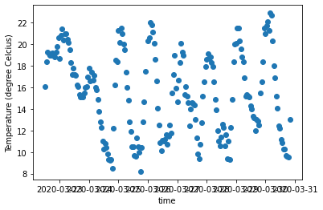
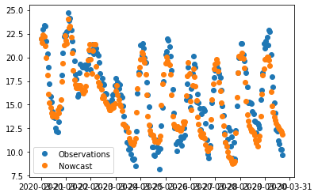

MetOcean Solutions Observation API connector¶
Run in Google Colab¶
Info
GitHub repository¶
N/A
Datasets¶
Please see the Datasets pages, here and here for further details.
Author¶
Sebastien Delaux/Greg Pearson
License¶
N/A
Technologies¶
N/A
Tags¶
Observation, lightning, location, time, intensity, type, cyclone, trajectories
Author: Sebastien Delaux
This notebook describes how to get observation data from one of MetOcean Solutions' observation API.
The data that can be accessed though the API come from different sources such as MetService's automatic weather station network, a number of wave buoys and tidal gages owned by various organisations. Different instances of the API are used for different sources. This connector should work for all of them.
The API provides the data as sets of records that belong to a station. Each station is identified by a unique id string. Each station has its own metadata describing location, instrument, ownership, status, license and level of permission. If the station is not open then anyone interested to use the data needs to get in contact with MetOcean to negotiate access to the data. Any access to data non data will be done using the same connector but authentication will need to be set when initialising the connector.
For now the connector allows to retrieve data in the shape of xarray datasets.
A complete documentation of the API can be found here: https://observations-open.metoceanapi.com/api/swagger/
Installation of required libraries¶
Install and import xarray and matplotlib in the current Jupyter kernel. Xarray is a great library to work with data stored using NetCDF format. MetOcean's Observation API can provide data under the form of netCDF-like JSON and hence xarray is a great option to work with that data. Matplotlib will used to plot the data.
import sys
!{sys.executable} -m pip install xarray matplotlib
import xarray
Collecting xarray
Using cached https://files.pythonhosted.org/packages/ee/11/fb2a8a6015e3de4ff19a4870bb0d11f48ebdd997062557d24cd076b3088f/xarray-0.15.1-py3-none-any.whl
Collecting matplotlib
Using cached https://files.pythonhosted.org/packages/93/4b/52da6b1523d5139d04e02d9e26ceda6146b48f2a4e5d2abfdf1c7bac8c40/matplotlib-3.2.1-cp36-cp36m-manylinux1_x86_64.whl
Collecting numpy>=1.15 (from xarray)
Using cached https://files.pythonhosted.org/packages/07/08/a549ba8b061005bb629b76adc000f3caaaf881028b963c2e18f811c6edc1/numpy-1.18.2-cp36-cp36m-manylinux1_x86_64.whl
Collecting setuptools>=41.2 (from xarray)
Using cached https://files.pythonhosted.org/packages/a0/df/635cdb901ee4a8a42ec68e480c49f85f4c59e8816effbf57d9e6ee8b3588/setuptools-46.1.3-py3-none-any.whl
Collecting pandas>=0.25 (from xarray)
Using cached https://files.pythonhosted.org/packages/bb/71/8f53bdbcbc67c912b888b40def255767e475402e9df64050019149b1a943/pandas-1.0.3-cp36-cp36m-manylinux1_x86_64.whl
Collecting python-dateutil>=2.1 (from matplotlib)
Using cached https://files.pythonhosted.org/packages/d4/70/d60450c3dd48ef87586924207ae8907090de0b306af2bce5d134d78615cb/python_dateutil-2.8.1-py2.py3-none-any.whl
Collecting kiwisolver>=1.0.1 (from matplotlib)
Using cached https://files.pythonhosted.org/packages/f8/a1/5742b56282449b1c0968197f63eae486eca2c35dcd334bab75ad524e0de1/kiwisolver-1.1.0-cp36-cp36m-manylinux1_x86_64.whl
Collecting pyparsing!=2.0.4,!=2.1.2,!=2.1.6,>=2.0.1 (from matplotlib)
Using cached https://files.pythonhosted.org/packages/5d/bc/1e58593167fade7b544bfe9502a26dc860940a79ab306e651e7f13be68c2/pyparsing-2.4.6-py2.py3-none-any.whl
Collecting cycler>=0.10 (from matplotlib)
Using cached https://files.pythonhosted.org/packages/f7/d2/e07d3ebb2bd7af696440ce7e754c59dd546ffe1bbe732c8ab68b9c834e61/cycler-0.10.0-py2.py3-none-any.whl
Collecting pytz>=2017.2 (from pandas>=0.25->xarray)
Using cached https://files.pythonhosted.org/packages/e7/f9/f0b53f88060247251bf481fa6ea62cd0d25bf1b11a87888e53ce5b7c8ad2/pytz-2019.3-py2.py3-none-any.whl
Collecting six>=1.5 (from python-dateutil>=2.1->matplotlib)
Using cached https://files.pythonhosted.org/packages/65/eb/1f97cb97bfc2390a276969c6fae16075da282f5058082d4cb10c6c5c1dba/six-1.14.0-py2.py3-none-any.whl
Installing collected packages: numpy, setuptools, pytz, six, python-dateutil, pandas, xarray, kiwisolver, pyparsing, cycler, matplotlib
Successfully installed cycler-0.10.0 kiwisolver-1.1.0 matplotlib-3.2.1 numpy-1.18.2 pandas-1.0.3 pyparsing-2.4.6 python-dateutil-2.8.1 pytz-2019.3 setuptools-46.1.3 six-1.14.0 xarray-0.15.1
Install and import cf-json extension to xarray which will be used to turn netCDF-like json as returned by the API into an xarray Dataset
!{sys.executable} -m pip install git+ssh://git@github.com/metocean/cf-json@v0.3.3
from cfjson.xrdataset import CFJSONinterface
Collecting git+ssh://git@github.com/metocean/cf-json@v0.3.3
Cloning ssh://git@github.com/metocean/cf-json (to v0.3.3) to /tmp/pip-ne5mykz6-build
Installing collected packages: cfjson
Running setup.py install for cfjson ... [?25ldone
[?25hSuccessfully installed cfjson-0.3.3
Import request library to query the API and path module of os package to help building url
import requests
from os import path
Definition of connector¶
Declare a new exception class that can be used to identify any exception raised by the connector
class MetOceanObsAPIException(Exception):
def __init__(self, message, obj=None, obj_name=None, status=400):
self.message = message
self.obj = obj
self.obj_name = obj_name
self.status = status
super(ThreddsServerConnector, self).__init__(message)
Definition of connector
class MetOceanObsAPIConnector(object):
"""
A class used to connect one of MetOcean Solution's instances
of their observation API.
Attributes
----------
root_url : str
The root url of the service
Methods
-------
get_station_metadata(station_id)
return the metadata associated with a given observation station
get_data()
return observation data retrieved from the API in the form of a xarray dataset object
"""
def __init__(self,
root_url="https://observations-open.metoceanapi.com",
username=None, password=None, api_key=None):
"""
Initialise the connector
Parameters
----------
root_url : str
The url of the observation API to connect to. (default is https://observations-open.metoceanapi.com)
username : str
The username to use to connect the API
password : str
The password to use to connect the API
api_key : str
The api_key to use to connect the API
Raises
------
NotImplementedError
If any of the authentication parameters is set.
"""
self.root_url = path.join(root_url, 'api/stations')
if username or password or api_key:
raise NotImplementedError("Secure authentication is yet to be implemented for the connector")
def get_station_metadata(self, station_id):
"""
Get the metadata associated with a given observation station
Parameters
----------
station_id : str
The id of the station to return the metadata for.
Raises
------
MetOceanObsAPIException
If query did not return with 200 status code
Returns
-------
dict
A dictionary containing the metadata associated with the station
"""
# Build query url
url = path.join(self.root_url,
station_id)
# Do request
res = requests.get(url)
# Check request successed. If not raise exception
if res.status_code != 200:
raise MetOceanObsAPIException("getstation_metadata query failed with status code {1} and reasons: %s"\
.format(res.status_code,\
res.text))
# Decode JSON response and return
return res.json()
def get_data(self,
station_id,
time=None,
variables=None,
max_nrecords=100):
"""
Get the metadata associated with a given observation station
Parameters
----------
station_id : str
The id of the station to return the metadata for.
time : str
ISO8601 time interval with double dash option and empty start/end allowed
used to filter the data. Valid exemples are:
time=2007-03-01T13:00:00Z--2008-05-11T15:30:00Z
time=2007-03-01T13:00:00Z--
time=--2008-05-11T15:30:00Z
variables : list
List of strings containing the name of the variables to retrieve.
Return all by default
max_nrecords : int
The maximum number of records to retrieve (default is 100)
Raises
------
MetOceanObsAPIException
If query did not return with 200 status code
Returns
-------
xarray dataset
A xarray dataset containing the data for the station
"""
# Build full url to query records
url = path.join(self.root_url,
station_id,
'records')
# Build dictionary with query parameters
params = {}
params['time'] = time
params['vars'] = variables
params['limit'] = max_nrecords
# Excecute request
res = requests.get(url,
headers={'accept': 'application/vnd.metocean.cf+json'},
params=params)
# Check for success
if res.status_code != 200:
raise MetOceanObsAPIException("Get data query failed with status code {1} and reasons: %s"\
.format(res.status_code,\
res.text))
# Turn data into xarray dataset
dset = xarray.Dataset()
dset.cfjson.from_json(res.json())
# Return xarray dataset
return dset
Instantiate new connector and retrieve metadata for the station of id 'ciwrb'
obs_api_connector = MetOceanObsAPIConnector()
metadata = obs_api_connector.get_station_metadata(station_id='ciwrb')
print(metadata)
{'id': 'ciwrb', 'name': 'ciwrb', 'tags': ['wave'], 'description': '', 'provider': 'metocean', 'level': 0.0, 'dataset': 'socean', 'coordinates': 'POINT (169.04916 -52.76000000000001)', 'latitude': -52.76000000000001, 'longitude': 169.04915999999997, 'public': True, 'is_active': False, 'last_record_at': '2019-06-19T18:00:00Z'}
For now the metadata available is limited and some metadata like the variables provided for a given station are not available. That information can be retrieved by first querying for a sample of the data.
dset = obs_api_connector.get_data(station_id='ciwrb',
max_nrecords=3)
From the sample result, the names of the variables can be listed:
for (var_name, var) in dset.data_vars.items():
print(var.attrs['standard_name'],'-->', var_name)
latitude --> latitude
longitude --> longitude
altitude --> level
sea_surface_wave_period_at_variance_spectral_density_maximum --> tp
sea_surface_wave_significant_height --> hs
sea_surface_wave_maximum_height --> hmax
sea_surface_wave_from_direction_at_variance_spectral_density_maximum --> dpm
Now we can query for specific variables only and a set time range
dset = obs_api_connector.get_data(station_id='ciwrb',
time='2019-06-18T15:00:00Z--2019-06-19T21:00:00Z',
variables=['hs', 'tp'],
max_nrecords=300)
print("Retrieved {0} records for station ciwrb".format(len(dset.time)))
Retrieved 9 records for station ciwrb
Now we can do the same for a weather station. We retrieve temperature (tmp) since 2020-01-21 19:00:00Z and we get at most 200 records
dset = obs_api_connector.get_data(station_id='tu0fknyk',
time=['2020-01-21 19:00:00Z--'],
max_nrecords=200)
print("Retrieved {0} records for station tu0fknyk".format(len(dset.time)))
Retrieved 200 records for station tu0fknyk
Now lets plot the data using matplotlib
%matplotlib inline
import matplotlib.pyplot as plt
from matplotlib.dates import date2num
plt.xlabel('time')
plt.ylabel('Temperature (degree Celcius)')
plt.plot_date(date2num(dset.time), dset.tmp.data)
[<matplotlib.lines.Line2D at 0x14c3179fb2e8>]

Simple numerical data correction example¶
Now we are going to put together a toy example aiming at correcting numerical data using observation data. That kind of approach could be used in the context of statistical downscaling.
Note that this is a toy example aimed at demonstrating a workflow and one added constraint for the demonstration was that it had to use a neural network model.
The amount of data used here is tiny and clearly not enough to build something scientifically robust. Also the model is only suitable in that it is aimed at working on sequences of data, we did not investigate scientific suitability and it is likely there are simpler and more suitable options.
The data used here is the 2 metres temperature from the nowcast for the last 9 days from the 0.25 degree GFS model at the same location as that of the observation station tu0fknyk.
from datetime import datetime
from dateutil.relativedelta import relativedelta
import numpy as np
Here is a useful function that converts the datetime format used by xarray to the "standard" python datetimes.
def datetime64_to_datetime(dd):
return datetime.utcfromtimestamp(round(dd.data.astype(int) * 1e-9))
Get the longitude/latitude coordinates of the observation point
lon0 = dset.longitude.data[0]
lat0 = dset.latitude.data[0]
Now load one of the GFS dataset to identify the nearest grid point to the observation station
now = datetime.utcnow()
gfs = xarray.open_dataset('https://nomads.ncep.noaa.gov:9090/dods/gfs_0p25_1hr/gfs%04d%02d%02d/gfs_0p25_1hr_00z'%(now.year, now.month, now.day))
ilon = np.argmin(np.abs(gfs.lon.data-lon0))
ilat = np.argmin(np.abs(gfs.lat.data-lat0))
print("Approximating longitude",lon0,"by",gfs.lon.data[ilon])
print("Approximating latitude",lat0,"by",gfs.lat.data[ilat])
print(ilon, ilat)
Approximating longitude 174.971 by 175.0
Approximating latitude -37.03 by -37.0
700 212
For the last 9 days, download all forecast guidances (cycles 0,6,12 and 18) available and keep the 2 metre temperature variable at the point of interest for the first 6 hours (nowcast).
now = datetime.utcnow()
t = datetime(now.year, now.month, now.day) - relativedelta(days=9)
data = []
files = []
while t < now:
for cycle in [0,6,12,18]:
try:
gfs = xarray.open_dataset('https://nomads.ncep.noaa.gov:9090/dods/gfs_0p25_1hr/gfs%04d%02d%02d/gfs_0p25_1hr_%02dz'%(t.year,t.month,t.day,cycle))
print(gfs.time[0].data)
files.append(gfs)
data.append(gfs.tmp2m[:6,ilat,ilon])
except:
pass
t = t + relativedelta(days=1)
2020-03-21T00:00:00.000000000
2020-03-21T06:00:00.000000000
2020-03-21T12:00:00.000000000
2020-03-21T18:00:00.000000000
2020-03-22T00:00:00.000000000
2020-03-22T06:00:00.000000000
2020-03-22T12:00:00.000000000
2020-03-22T18:00:00.000000000
2020-03-23T00:00:00.000000000
2020-03-23T06:00:00.000000000
2020-03-23T12:00:00.000000000
2020-03-23T18:00:00.000000000
2020-03-24T00:00:00.000000000
2020-03-24T06:00:00.000000000
2020-03-24T12:00:00.000000000
2020-03-24T18:00:00.000000000
2020-03-25T00:00:00.000000000
2020-03-25T06:00:00.000000000
2020-03-25T12:00:00.000000000
2020-03-25T18:00:00.000000000
2020-03-26T00:00:00.000000000
2020-03-26T06:00:00.000000000
2020-03-26T12:00:00.000000000
2020-03-26T18:00:00.000000000
2020-03-27T00:00:00.000000000
2020-03-27T06:00:00.000000000
2020-03-27T12:00:00.000000000
2020-03-27T18:00:00.000000000
2020-03-28T00:00:00.000000000
2020-03-28T06:00:00.000000000
2020-03-28T12:00:00.000000000
2020-03-28T18:00:00.000000000
2020-03-29T00:00:00.000000000
2020-03-29T06:00:00.000000000
2020-03-29T12:00:00.000000000
2020-03-29T18:00:00.000000000
2020-03-30T00:00:00.000000000
2020-03-30T06:00:00.000000000
2020-03-30T12:00:00.000000000
Concatenate all the 6 hours segments into a single one
nowcast = xarray.concat(data,dim='time')
Now we get all the observation available since the start of the nowcast
t0 = datetime64_to_datetime(nowcast.time[0])
obs = obs_api_connector.get_data(station_id='tu0fknyk',
time=['%04d-%02d-%02d %02d:00:00Z--'%(t0.year, t0.month, t0.day, t0.hour)],
max_nrecords=1000)
As the observation API returns the most recent recoords first, we sort them by ascending time.
obs = obs.sortby('time', ascending=True)
Now we match the data. For each observation that has a corresponding time-stamp in the nowcast put data keep the data.
obs_data = []
nowcast_data = []
time = []
# Parse datetime for nowcast
nowcast_time = np.array([datetime64_to_datetime(t) for t in nowcast.time])
for it, t in enumerate(obs.time[:]):
# Check if match
match = np.where(nowcast_time == datetime64_to_datetime(t))
if len(match[0]) == 1:
obs_data.append(obs.tmp.data[it])
nowcast_data.append(nowcast[match[0]].data[0])
time.append(datetime64_to_datetime(t))
# Turn list into numpy array (nicer to work with)
obs_data = np.array(obs_data)
# Do also conversion from Kelvin to Celcius
nowcast_data = np.array(nowcast_data)-273.18
time = np.array(time)
Now let's plot the retrieved data. There does not seem to be much if any bias but it looks like the amplitude of the daily variations in the observations is slightly larger than that of the nowcast data so maybe we can correct for that.
%matplotlib inline
plt.plot_date(date2num(time), obs_data, label='Observations')
plt.plot_date(date2num(time), nowcast_data, label='Nowcast')
plt.legend()
<matplotlib.legend.Legend at 0x14c3112d52b0>

We will have a go at using a simple LSTM model built using Keras with a tensorflow backend. We assume that the image/environment we use here already has CUDA/CUDNN/Tensorflow installed. We just add Keras.
!{sys.executable} -m pip install keras
Collecting keras
Using cached https://files.pythonhosted.org/packages/ad/fd/6bfe87920d7f4fd475acd28500a42482b6b84479832bdc0fe9e589a60ceb/Keras-2.3.1-py2.py3-none-any.whl
Collecting h5py (from keras)
Using cached https://files.pythonhosted.org/packages/60/06/cafdd44889200e5438b897388f3075b52a8ef01f28a17366d91de0fa2d05/h5py-2.10.0-cp36-cp36m-manylinux1_x86_64.whl
Collecting keras-preprocessing>=1.0.5 (from keras)
Using cached https://files.pythonhosted.org/packages/28/6a/8c1f62c37212d9fc441a7e26736df51ce6f0e38455816445471f10da4f0a/Keras_Preprocessing-1.1.0-py2.py3-none-any.whl
Collecting six>=1.9.0 (from keras)
Using cached https://files.pythonhosted.org/packages/65/eb/1f97cb97bfc2390a276969c6fae16075da282f5058082d4cb10c6c5c1dba/six-1.14.0-py2.py3-none-any.whl
Collecting pyyaml (from keras)
Collecting scipy>=0.14 (from keras)
Using cached https://files.pythonhosted.org/packages/dc/29/162476fd44203116e7980cfbd9352eef9db37c49445d1fec35509022f6aa/scipy-1.4.1-cp36-cp36m-manylinux1_x86_64.whl
Collecting numpy>=1.9.1 (from keras)
Using cached https://files.pythonhosted.org/packages/07/08/a549ba8b061005bb629b76adc000f3caaaf881028b963c2e18f811c6edc1/numpy-1.18.2-cp36-cp36m-manylinux1_x86_64.whl
Collecting keras-applications>=1.0.6 (from keras)
Using cached https://files.pythonhosted.org/packages/71/e3/19762fdfc62877ae9102edf6342d71b28fbfd9dea3d2f96a882ce099b03f/Keras_Applications-1.0.8-py3-none-any.whl
Installing collected packages: six, numpy, h5py, keras-preprocessing, pyyaml, scipy, keras-applications, keras
Successfully installed h5py-2.10.0 keras-2.3.1 keras-applications-1.0.8 keras-preprocessing-1.1.0 numpy-1.18.2 pyyaml-5.3.1 scipy-1.4.1 six-1.14.0
First we prepare the data to model. We will use sequences of the 15 consecutive nowcast points and attempt at predicting the difference between the observations and the nowcast.
x = np.array([nowcast_data[i:i+15] for i in range(len(nowcast_data)-15)])
y = np.array([obs_data[i:i+15][-1]-nowcast_data[i:i+15][-1] for i in range(len(obs_data)-15)])
# Needs to be of shape (nsamples, sequence_length, nfeatures)
x = x.reshape(x.shape[0], x.shape[1], 1)
We normalise the input data to the neural network
xmin = x.min()
xmax = x.max()
x = (x-xmin)/(xmax-xmin)
print(xmin, xmax)
8.8012085 24.061737
Now we load leras and build the model
import keras
from keras.models import Sequential, Model
from keras.layers import Dense, LSTM, Input
neurons = 10
batch_size = 32
nb_epoch = 1000
ip = Input((x.shape[1], x.shape[2]))
xx = LSTM(neurons, stateful=False)(ip)
out = Dense(1)(xx)
model = Model(ip, out)
model.compile(loss='mean_squared_error', optimizer='adam')
We train the model on all data except for the last 50 samples
model.fit(x[:-50], y[:-50], epochs=nb_epoch, batch_size=batch_size, verbose=1, shuffle=False)
Epoch 1/1000
168/168 [==============================] - 0s 2ms/step - loss: 2.5169
Epoch 2/1000
168/168 [==============================] - 0s 114us/step - loss: 2.4623
Epoch 3/1000
168/168 [==============================] - 0s 115us/step - loss: 2.4153
Epoch 4/1000
168/168 [==============================] - 0s 125us/step - loss: 2.3740
Epoch 5/1000
168/168 [==============================] - 0s 101us/step - loss: 2.3374
Epoch 6/1000
168/168 [==============================] - 0s 138us/step - loss: 2.3045
Epoch 7/1000
168/168 [==============================] - 0s 111us/step - loss: 2.2747
Epoch 8/1000
168/168 [==============================] - 0s 130us/step - loss: 2.2474
Epoch 9/1000
168/168 [==============================] - 0s 116us/step - loss: 2.2220
Epoch 10/1000
168/168 [==============================] - 0s 108us/step - loss: 2.1983
Epoch 11/1000
168/168 [==============================] - 0s 107us/step - loss: 2.1762
Epoch 12/1000
168/168 [==============================] - 0s 108us/step - loss: 2.1557
Epoch 13/1000
168/168 [==============================] - 0s 196us/step - loss: 2.1367
Epoch 14/1000
168/168 [==============================] - 0s 115us/step - loss: 2.1194
Epoch 15/1000
168/168 [==============================] - 0s 120us/step - loss: 2.1040
Epoch 16/1000
168/168 [==============================] - 0s 115us/step - loss: 2.0907
Epoch 17/1000
168/168 [==============================] - 0s 117us/step - loss: 2.0796
Epoch 18/1000
168/168 [==============================] - 0s 112us/step - loss: 2.0708
Epoch 19/1000
168/168 [==============================] - 0s 103us/step - loss: 2.0640
Epoch 20/1000
168/168 [==============================] - 0s 96us/step - loss: 2.0589
Epoch 21/1000
168/168 [==============================] - 0s 110us/step - loss: 2.0548
Epoch 22/1000
168/168 [==============================] - 0s 104us/step - loss: 2.0512
Epoch 23/1000
168/168 [==============================] - 0s 109us/step - loss: 2.0476
Epoch 24/1000
168/168 [==============================] - 0s 123us/step - loss: 2.0437
Epoch 25/1000
168/168 [==============================] - 0s 107us/step - loss: 2.0393
Epoch 26/1000
168/168 [==============================] - 0s 121us/step - loss: 2.0346
Epoch 27/1000
168/168 [==============================] - 0s 105us/step - loss: 2.0296
Epoch 28/1000
168/168 [==============================] - 0s 106us/step - loss: 2.0244
Epoch 29/1000
168/168 [==============================] - 0s 125us/step - loss: 2.0191
Epoch 30/1000
168/168 [==============================] - 0s 104us/step - loss: 2.0137
Epoch 31/1000
168/168 [==============================] - 0s 128us/step - loss: 2.0084
Epoch 32/1000
168/168 [==============================] - 0s 141us/step - loss: 2.0030
Epoch 33/1000
168/168 [==============================] - 0s 114us/step - loss: 1.9976
Epoch 34/1000
168/168 [==============================] - 0s 134us/step - loss: 1.9921
Epoch 35/1000
168/168 [==============================] - 0s 108us/step - loss: 1.9866
Epoch 36/1000
168/168 [==============================] - 0s 110us/step - loss: 1.9811
Epoch 37/1000
168/168 [==============================] - 0s 97us/step - loss: 1.9755
Epoch 38/1000
168/168 [==============================] - 0s 115us/step - loss: 1.9699
Epoch 39/1000
168/168 [==============================] - 0s 145us/step - loss: 1.9642
Epoch 40/1000
168/168 [==============================] - 0s 112us/step - loss: 1.9585
Epoch 41/1000
168/168 [==============================] - 0s 108us/step - loss: 1.9527
Epoch 42/1000
168/168 [==============================] - 0s 117us/step - loss: 1.9469
Epoch 43/1000
168/168 [==============================] - 0s 141us/step - loss: 1.9411
Epoch 44/1000
168/168 [==============================] - 0s 108us/step - loss: 1.9352
Epoch 45/1000
168/168 [==============================] - 0s 142us/step - loss: 1.9293
Epoch 46/1000
168/168 [==============================] - 0s 97us/step - loss: 1.9233
Epoch 47/1000
168/168 [==============================] - 0s 129us/step - loss: 1.9174
Epoch 48/1000
168/168 [==============================] - 0s 122us/step - loss: 1.9114
Epoch 49/1000
168/168 [==============================] - 0s 122us/step - loss: 1.9055
Epoch 50/1000
168/168 [==============================] - 0s 108us/step - loss: 1.8996
Epoch 51/1000
168/168 [==============================] - 0s 117us/step - loss: 1.8938
Epoch 52/1000
168/168 [==============================] - 0s 125us/step - loss: 1.8880
Epoch 53/1000
168/168 [==============================] - 0s 110us/step - loss: 1.8822
Epoch 54/1000
168/168 [==============================] - 0s 114us/step - loss: 1.8766
Epoch 55/1000
168/168 [==============================] - 0s 109us/step - loss: 1.8710
Epoch 56/1000
168/168 [==============================] - 0s 108us/step - loss: 1.8655
Epoch 57/1000
168/168 [==============================] - 0s 125us/step - loss: 1.8602
Epoch 58/1000
168/168 [==============================] - 0s 106us/step - loss: 1.8550
Epoch 59/1000
168/168 [==============================] - 0s 122us/step - loss: 1.8500
Epoch 60/1000
168/168 [==============================] - 0s 107us/step - loss: 1.8451
Epoch 61/1000
168/168 [==============================] - 0s 99us/step - loss: 1.8404
Epoch 62/1000
168/168 [==============================] - 0s 105us/step - loss: 1.8358
Epoch 63/1000
168/168 [==============================] - 0s 98us/step - loss: 1.8314
Epoch 64/1000
168/168 [==============================] - 0s 115us/step - loss: 1.8273
Epoch 65/1000
168/168 [==============================] - 0s 110us/step - loss: 1.8232
Epoch 66/1000
168/168 [==============================] - 0s 114us/step - loss: 1.8194
Epoch 67/1000
168/168 [==============================] - 0s 115us/step - loss: 1.8157
Epoch 68/1000
168/168 [==============================] - 0s 118us/step - loss: 1.8122
Epoch 69/1000
168/168 [==============================] - 0s 135us/step - loss: 1.8088
Epoch 70/1000
168/168 [==============================] - 0s 107us/step - loss: 1.8055
Epoch 71/1000
168/168 [==============================] - 0s 109us/step - loss: 1.8024
Epoch 72/1000
168/168 [==============================] - 0s 121us/step - loss: 1.7994
Epoch 73/1000
168/168 [==============================] - 0s 112us/step - loss: 1.7965
Epoch 74/1000
168/168 [==============================] - 0s 103us/step - loss: 1.7937
Epoch 75/1000
168/168 [==============================] - 0s 127us/step - loss: 1.7909
Epoch 76/1000
168/168 [==============================] - 0s 111us/step - loss: 1.7882
Epoch 77/1000
168/168 [==============================] - 0s 101us/step - loss: 1.7856
Epoch 78/1000
168/168 [==============================] - 0s 109us/step - loss: 1.7831
Epoch 79/1000
168/168 [==============================] - 0s 111us/step - loss: 1.7805
Epoch 80/1000
168/168 [==============================] - 0s 104us/step - loss: 1.7781
Epoch 81/1000
168/168 [==============================] - 0s 108us/step - loss: 1.7756
Epoch 82/1000
168/168 [==============================] - 0s 107us/step - loss: 1.7732
Epoch 83/1000
168/168 [==============================] - 0s 136us/step - loss: 1.7708
Epoch 84/1000
168/168 [==============================] - 0s 115us/step - loss: 1.7684
Epoch 85/1000
168/168 [==============================] - 0s 149us/step - loss: 1.7661
Epoch 86/1000
168/168 [==============================] - 0s 130us/step - loss: 1.7637
Epoch 87/1000
168/168 [==============================] - 0s 104us/step - loss: 1.7613
Epoch 88/1000
168/168 [==============================] - 0s 102us/step - loss: 1.7590
Epoch 89/1000
168/168 [==============================] - 0s 154us/step - loss: 1.7567
Epoch 90/1000
168/168 [==============================] - 0s 100us/step - loss: 1.7543
Epoch 91/1000
168/168 [==============================] - 0s 106us/step - loss: 1.7519
Epoch 92/1000
168/168 [==============================] - 0s 102us/step - loss: 1.7496
Epoch 93/1000
168/168 [==============================] - 0s 108us/step - loss: 1.7472
Epoch 94/1000
168/168 [==============================] - 0s 108us/step - loss: 1.7448
Epoch 95/1000
168/168 [==============================] - 0s 106us/step - loss: 1.7424
Epoch 96/1000
168/168 [==============================] - 0s 110us/step - loss: 1.7400
Epoch 97/1000
168/168 [==============================] - 0s 106us/step - loss: 1.7376
Epoch 98/1000
168/168 [==============================] - 0s 120us/step - loss: 1.7351
Epoch 99/1000
168/168 [==============================] - 0s 102us/step - loss: 1.7327
Epoch 100/1000
168/168 [==============================] - 0s 100us/step - loss: 1.7302
Epoch 101/1000
168/168 [==============================] - 0s 111us/step - loss: 1.7276
Epoch 102/1000
168/168 [==============================] - 0s 118us/step - loss: 1.7251
Epoch 103/1000
168/168 [==============================] - 0s 104us/step - loss: 1.7225
Epoch 104/1000
168/168 [==============================] - 0s 108us/step - loss: 1.7199
Epoch 105/1000
168/168 [==============================] - 0s 107us/step - loss: 1.7173
Epoch 106/1000
168/168 [==============================] - 0s 109us/step - loss: 1.7146
Epoch 107/1000
168/168 [==============================] - 0s 108us/step - loss: 1.7119
Epoch 108/1000
168/168 [==============================] - 0s 109us/step - loss: 1.7091
Epoch 109/1000
168/168 [==============================] - 0s 130us/step - loss: 1.7063
Epoch 110/1000
168/168 [==============================] - 0s 103us/step - loss: 1.7035
Epoch 111/1000
168/168 [==============================] - 0s 103us/step - loss: 1.7006
Epoch 112/1000
168/168 [==============================] - 0s 118us/step - loss: 1.6977
Epoch 113/1000
168/168 [==============================] - 0s 93us/step - loss: 1.6947
Epoch 114/1000
168/168 [==============================] - 0s 119us/step - loss: 1.6917
Epoch 115/1000
168/168 [==============================] - 0s 127us/step - loss: 1.6886
Epoch 116/1000
168/168 [==============================] - 0s 119us/step - loss: 1.6854
Epoch 117/1000
168/168 [==============================] - 0s 107us/step - loss: 1.6822
Epoch 118/1000
168/168 [==============================] - 0s 104us/step - loss: 1.6789
Epoch 119/1000
168/168 [==============================] - 0s 117us/step - loss: 1.6756
Epoch 120/1000
168/168 [==============================] - 0s 108us/step - loss: 1.6722
Epoch 121/1000
168/168 [==============================] - 0s 124us/step - loss: 1.6687
Epoch 122/1000
168/168 [==============================] - 0s 101us/step - loss: 1.6651
Epoch 123/1000
168/168 [==============================] - 0s 98us/step - loss: 1.6615
Epoch 124/1000
168/168 [==============================] - 0s 118us/step - loss: 1.6578
Epoch 125/1000
168/168 [==============================] - 0s 105us/step - loss: 1.6540
Epoch 126/1000
168/168 [==============================] - 0s 104us/step - loss: 1.6502
Epoch 127/1000
168/168 [==============================] - 0s 100us/step - loss: 1.6462
Epoch 128/1000
168/168 [==============================] - 0s 116us/step - loss: 1.6423
Epoch 129/1000
168/168 [==============================] - 0s 105us/step - loss: 1.6382
Epoch 130/1000
168/168 [==============================] - 0s 112us/step - loss: 1.6341
Epoch 131/1000
168/168 [==============================] - 0s 101us/step - loss: 1.6300
Epoch 132/1000
168/168 [==============================] - 0s 105us/step - loss: 1.6258
Epoch 133/1000
168/168 [==============================] - 0s 99us/step - loss: 1.6216
Epoch 134/1000
168/168 [==============================] - 0s 101us/step - loss: 1.6174
Epoch 135/1000
168/168 [==============================] - 0s 102us/step - loss: 1.6132
Epoch 136/1000
168/168 [==============================] - 0s 111us/step - loss: 1.6090
Epoch 137/1000
168/168 [==============================] - 0s 110us/step - loss: 1.6049
Epoch 138/1000
168/168 [==============================] - 0s 99us/step - loss: 1.6007
Epoch 139/1000
168/168 [==============================] - 0s 109us/step - loss: 1.5967
Epoch 140/1000
168/168 [==============================] - 0s 105us/step - loss: 1.5926
Epoch 141/1000
168/168 [==============================] - 0s 129us/step - loss: 1.5887
Epoch 142/1000
168/168 [==============================] - 0s 104us/step - loss: 1.5848
Epoch 143/1000
168/168 [==============================] - 0s 149us/step - loss: 1.5810
Epoch 144/1000
168/168 [==============================] - 0s 110us/step - loss: 1.5773
Epoch 145/1000
168/168 [==============================] - 0s 120us/step - loss: 1.5737
Epoch 146/1000
168/168 [==============================] - 0s 138us/step - loss: 1.5702
Epoch 147/1000
168/168 [==============================] - 0s 129us/step - loss: 1.5668
Epoch 148/1000
168/168 [==============================] - 0s 111us/step - loss: 1.5635
Epoch 149/1000
168/168 [==============================] - 0s 107us/step - loss: 1.5603
Epoch 150/1000
168/168 [==============================] - 0s 117us/step - loss: 1.5572
Epoch 151/1000
168/168 [==============================] - 0s 137us/step - loss: 1.5542
Epoch 152/1000
168/168 [==============================] - 0s 109us/step - loss: 1.5514
Epoch 153/1000
168/168 [==============================] - 0s 103us/step - loss: 1.5486
Epoch 154/1000
168/168 [==============================] - 0s 107us/step - loss: 1.5459
Epoch 155/1000
168/168 [==============================] - 0s 104us/step - loss: 1.5432
Epoch 156/1000
168/168 [==============================] - 0s 97us/step - loss: 1.5407
Epoch 157/1000
168/168 [==============================] - 0s 106us/step - loss: 1.5382
Epoch 158/1000
168/168 [==============================] - 0s 134us/step - loss: 1.5358
Epoch 159/1000
168/168 [==============================] - 0s 118us/step - loss: 1.5334
Epoch 160/1000
168/168 [==============================] - 0s 120us/step - loss: 1.5311
Epoch 161/1000
168/168 [==============================] - 0s 104us/step - loss: 1.5289
Epoch 162/1000
168/168 [==============================] - 0s 99us/step - loss: 1.5267
Epoch 163/1000
168/168 [==============================] - 0s 126us/step - loss: 1.5245
Epoch 164/1000
168/168 [==============================] - 0s 112us/step - loss: 1.5224
Epoch 165/1000
168/168 [==============================] - 0s 110us/step - loss: 1.5204
Epoch 166/1000
168/168 [==============================] - 0s 104us/step - loss: 1.5183
Epoch 167/1000
168/168 [==============================] - 0s 102us/step - loss: 1.5163
Epoch 168/1000
168/168 [==============================] - 0s 103us/step - loss: 1.5143
Epoch 169/1000
168/168 [==============================] - 0s 102us/step - loss: 1.5124
Epoch 170/1000
168/168 [==============================] - 0s 108us/step - loss: 1.5105
Epoch 171/1000
168/168 [==============================] - 0s 112us/step - loss: 1.5086
Epoch 172/1000
168/168 [==============================] - 0s 135us/step - loss: 1.5067
Epoch 173/1000
168/168 [==============================] - 0s 102us/step - loss: 1.5048
Epoch 174/1000
168/168 [==============================] - 0s 119us/step - loss: 1.5030
Epoch 175/1000
168/168 [==============================] - 0s 104us/step - loss: 1.5012
Epoch 176/1000
168/168 [==============================] - 0s 100us/step - loss: 1.4994
Epoch 177/1000
168/168 [==============================] - 0s 111us/step - loss: 1.4976
Epoch 178/1000
168/168 [==============================] - 0s 109us/step - loss: 1.4959
Epoch 179/1000
168/168 [==============================] - 0s 101us/step - loss: 1.4941
Epoch 180/1000
168/168 [==============================] - 0s 115us/step - loss: 1.4924
Epoch 181/1000
168/168 [==============================] - 0s 105us/step - loss: 1.4906
Epoch 182/1000
168/168 [==============================] - 0s 107us/step - loss: 1.4889
Epoch 183/1000
168/168 [==============================] - 0s 122us/step - loss: 1.4872
Epoch 184/1000
168/168 [==============================] - 0s 130us/step - loss: 1.4855
Epoch 185/1000
168/168 [==============================] - 0s 107us/step - loss: 1.4838
Epoch 186/1000
168/168 [==============================] - 0s 105us/step - loss: 1.4821
Epoch 187/1000
168/168 [==============================] - 0s 105us/step - loss: 1.4804
Epoch 188/1000
168/168 [==============================] - 0s 123us/step - loss: 1.4787
Epoch 189/1000
168/168 [==============================] - 0s 151us/step - loss: 1.4770
Epoch 190/1000
168/168 [==============================] - 0s 113us/step - loss: 1.4754
Epoch 191/1000
168/168 [==============================] - 0s 106us/step - loss: 1.4737
Epoch 192/1000
168/168 [==============================] - 0s 102us/step - loss: 1.4720
Epoch 193/1000
168/168 [==============================] - 0s 120us/step - loss: 1.4703
Epoch 194/1000
168/168 [==============================] - 0s 109us/step - loss: 1.4687
Epoch 195/1000
168/168 [==============================] - 0s 99us/step - loss: 1.4670
Epoch 196/1000
168/168 [==============================] - 0s 122us/step - loss: 1.4653
Epoch 197/1000
168/168 [==============================] - 0s 106us/step - loss: 1.4636
Epoch 198/1000
168/168 [==============================] - 0s 100us/step - loss: 1.4619
Epoch 199/1000
168/168 [==============================] - 0s 114us/step - loss: 1.4602
Epoch 200/1000
168/168 [==============================] - 0s 98us/step - loss: 1.4585
Epoch 201/1000
168/168 [==============================] - 0s 109us/step - loss: 1.4568
Epoch 202/1000
168/168 [==============================] - 0s 104us/step - loss: 1.4550
Epoch 203/1000
168/168 [==============================] - 0s 107us/step - loss: 1.4533
Epoch 204/1000
168/168 [==============================] - 0s 106us/step - loss: 1.4516
Epoch 205/1000
168/168 [==============================] - 0s 116us/step - loss: 1.4498
Epoch 206/1000
168/168 [==============================] - 0s 111us/step - loss: 1.4481
Epoch 207/1000
168/168 [==============================] - 0s 103us/step - loss: 1.4463
Epoch 208/1000
168/168 [==============================] - 0s 114us/step - loss: 1.4445
Epoch 209/1000
168/168 [==============================] - 0s 110us/step - loss: 1.4427
Epoch 210/1000
168/168 [==============================] - 0s 115us/step - loss: 1.4409
Epoch 211/1000
168/168 [==============================] - 0s 136us/step - loss: 1.4391
Epoch 212/1000
168/168 [==============================] - 0s 101us/step - loss: 1.4372
Epoch 213/1000
168/168 [==============================] - 0s 119us/step - loss: 1.4354
Epoch 214/1000
168/168 [==============================] - 0s 113us/step - loss: 1.4335
Epoch 215/1000
168/168 [==============================] - 0s 105us/step - loss: 1.4316
Epoch 216/1000
168/168 [==============================] - 0s 104us/step - loss: 1.4297
Epoch 217/1000
168/168 [==============================] - 0s 95us/step - loss: 1.4278
Epoch 218/1000
168/168 [==============================] - 0s 99us/step - loss: 1.4259
Epoch 219/1000
168/168 [==============================] - 0s 132us/step - loss: 1.4240
Epoch 220/1000
168/168 [==============================] - 0s 109us/step - loss: 1.4220
Epoch 221/1000
168/168 [==============================] - 0s 100us/step - loss: 1.4201
Epoch 222/1000
168/168 [==============================] - 0s 106us/step - loss: 1.4181
Epoch 223/1000
168/168 [==============================] - 0s 151us/step - loss: 1.4161
Epoch 224/1000
168/168 [==============================] - 0s 115us/step - loss: 1.4141
Epoch 225/1000
168/168 [==============================] - 0s 107us/step - loss: 1.4121
Epoch 226/1000
168/168 [==============================] - 0s 97us/step - loss: 1.4101
Epoch 227/1000
168/168 [==============================] - 0s 131us/step - loss: 1.4081
Epoch 228/1000
168/168 [==============================] - 0s 127us/step - loss: 1.4060
Epoch 229/1000
168/168 [==============================] - 0s 98us/step - loss: 1.4040
Epoch 230/1000
168/168 [==============================] - 0s 109us/step - loss: 1.4019
Epoch 231/1000
168/168 [==============================] - 0s 112us/step - loss: 1.3998
Epoch 232/1000
168/168 [==============================] - 0s 101us/step - loss: 1.3977
Epoch 233/1000
168/168 [==============================] - 0s 105us/step - loss: 1.3956
Epoch 234/1000
168/168 [==============================] - 0s 110us/step - loss: 1.3935
Epoch 235/1000
168/168 [==============================] - 0s 98us/step - loss: 1.3914
Epoch 236/1000
168/168 [==============================] - 0s 118us/step - loss: 1.3893
Epoch 237/1000
168/168 [==============================] - 0s 143us/step - loss: 1.3871
Epoch 238/1000
168/168 [==============================] - 0s 114us/step - loss: 1.3850
Epoch 239/1000
168/168 [==============================] - 0s 105us/step - loss: 1.3828
Epoch 240/1000
168/168 [==============================] - 0s 104us/step - loss: 1.3806
Epoch 241/1000
168/168 [==============================] - 0s 107us/step - loss: 1.3784
Epoch 242/1000
168/168 [==============================] - 0s 103us/step - loss: 1.3762
Epoch 243/1000
168/168 [==============================] - 0s 114us/step - loss: 1.3740
Epoch 244/1000
168/168 [==============================] - 0s 101us/step - loss: 1.3718
Epoch 245/1000
168/168 [==============================] - 0s 106us/step - loss: 1.3696
Epoch 246/1000
168/168 [==============================] - 0s 115us/step - loss: 1.3674
Epoch 247/1000
168/168 [==============================] - 0s 109us/step - loss: 1.3651
Epoch 248/1000
168/168 [==============================] - 0s 127us/step - loss: 1.3629
Epoch 249/1000
168/168 [==============================] - 0s 96us/step - loss: 1.3606
Epoch 250/1000
168/168 [==============================] - 0s 106us/step - loss: 1.3583
Epoch 251/1000
168/168 [==============================] - 0s 95us/step - loss: 1.3560
Epoch 252/1000
168/168 [==============================] - 0s 118us/step - loss: 1.3538
Epoch 253/1000
168/168 [==============================] - 0s 136us/step - loss: 1.3515
Epoch 254/1000
168/168 [==============================] - 0s 103us/step - loss: 1.3492
Epoch 255/1000
168/168 [==============================] - 0s 110us/step - loss: 1.3468
Epoch 256/1000
168/168 [==============================] - 0s 106us/step - loss: 1.3445
Epoch 257/1000
168/168 [==============================] - 0s 145us/step - loss: 1.3422
Epoch 258/1000
168/168 [==============================] - 0s 123us/step - loss: 1.3399
Epoch 259/1000
168/168 [==============================] - 0s 110us/step - loss: 1.3375
Epoch 260/1000
168/168 [==============================] - 0s 106us/step - loss: 1.3352
Epoch 261/1000
168/168 [==============================] - 0s 116us/step - loss: 1.3328
Epoch 262/1000
168/168 [==============================] - 0s 106us/step - loss: 1.3305
Epoch 263/1000
168/168 [==============================] - 0s 101us/step - loss: 1.3281
Epoch 264/1000
168/168 [==============================] - 0s 108us/step - loss: 1.3257
Epoch 265/1000
168/168 [==============================] - 0s 121us/step - loss: 1.3233
Epoch 266/1000
168/168 [==============================] - 0s 104us/step - loss: 1.3210
Epoch 267/1000
168/168 [==============================] - 0s 101us/step - loss: 1.3186
Epoch 268/1000
168/168 [==============================] - 0s 111us/step - loss: 1.3162
Epoch 269/1000
168/168 [==============================] - 0s 99us/step - loss: 1.3138
Epoch 270/1000
168/168 [==============================] - 0s 113us/step - loss: 1.3114
Epoch 271/1000
168/168 [==============================] - 0s 98us/step - loss: 1.3090
Epoch 272/1000
168/168 [==============================] - 0s 112us/step - loss: 1.3066
Epoch 273/1000
168/168 [==============================] - 0s 104us/step - loss: 1.3042
Epoch 274/1000
168/168 [==============================] - 0s 106us/step - loss: 1.3018
Epoch 275/1000
168/168 [==============================] - 0s 127us/step - loss: 1.2994
Epoch 276/1000
168/168 [==============================] - 0s 102us/step - loss: 1.2970
Epoch 277/1000
168/168 [==============================] - 0s 104us/step - loss: 1.2946
Epoch 278/1000
168/168 [==============================] - 0s 103us/step - loss: 1.2922
Epoch 279/1000
168/168 [==============================] - 0s 116us/step - loss: 1.2898
Epoch 280/1000
168/168 [==============================] - 0s 116us/step - loss: 1.2874
Epoch 281/1000
168/168 [==============================] - 0s 100us/step - loss: 1.2849
Epoch 282/1000
168/168 [==============================] - 0s 123us/step - loss: 1.2825
Epoch 283/1000
168/168 [==============================] - 0s 104us/step - loss: 1.2801
Epoch 284/1000
168/168 [==============================] - 0s 126us/step - loss: 1.2777
Epoch 285/1000
168/168 [==============================] - 0s 113us/step - loss: 1.2753
Epoch 286/1000
168/168 [==============================] - 0s 112us/step - loss: 1.2729
Epoch 287/1000
168/168 [==============================] - 0s 115us/step - loss: 1.2705
Epoch 288/1000
168/168 [==============================] - 0s 103us/step - loss: 1.2681
Epoch 289/1000
168/168 [==============================] - 0s 105us/step - loss: 1.2657
Epoch 290/1000
168/168 [==============================] - 0s 101us/step - loss: 1.2633
Epoch 291/1000
168/168 [==============================] - 0s 120us/step - loss: 1.2609
Epoch 292/1000
168/168 [==============================] - 0s 117us/step - loss: 1.2585
Epoch 293/1000
168/168 [==============================] - 0s 103us/step - loss: 1.2561
Epoch 294/1000
168/168 [==============================] - 0s 111us/step - loss: 1.2537
Epoch 295/1000
168/168 [==============================] - 0s 98us/step - loss: 1.2513
Epoch 296/1000
168/168 [==============================] - 0s 110us/step - loss: 1.2489
Epoch 297/1000
168/168 [==============================] - 0s 94us/step - loss: 1.2466
Epoch 298/1000
168/168 [==============================] - 0s 98us/step - loss: 1.2442
Epoch 299/1000
168/168 [==============================] - 0s 106us/step - loss: 1.2418
Epoch 300/1000
168/168 [==============================] - 0s 135us/step - loss: 1.2394
Epoch 301/1000
168/168 [==============================] - 0s 118us/step - loss: 1.2371
Epoch 302/1000
168/168 [==============================] - 0s 105us/step - loss: 1.2347
Epoch 303/1000
168/168 [==============================] - 0s 105us/step - loss: 1.2323
Epoch 304/1000
168/168 [==============================] - 0s 103us/step - loss: 1.2300
Epoch 305/1000
168/168 [==============================] - 0s 113us/step - loss: 1.2276
Epoch 306/1000
168/168 [==============================] - 0s 119us/step - loss: 1.2253
Epoch 307/1000
168/168 [==============================] - 0s 118us/step - loss: 1.2229
Epoch 308/1000
168/168 [==============================] - 0s 101us/step - loss: 1.2206
Epoch 309/1000
168/168 [==============================] - 0s 114us/step - loss: 1.2183
Epoch 310/1000
168/168 [==============================] - 0s 106us/step - loss: 1.2159
Epoch 311/1000
168/168 [==============================] - 0s 114us/step - loss: 1.2136
Epoch 312/1000
168/168 [==============================] - 0s 133us/step - loss: 1.2113
Epoch 313/1000
168/168 [==============================] - 0s 114us/step - loss: 1.2090
Epoch 314/1000
168/168 [==============================] - 0s 103us/step - loss: 1.2066
Epoch 315/1000
168/168 [==============================] - 0s 110us/step - loss: 1.2043
Epoch 316/1000
168/168 [==============================] - 0s 103us/step - loss: 1.2020
Epoch 317/1000
168/168 [==============================] - 0s 106us/step - loss: 1.1997
Epoch 318/1000
168/168 [==============================] - 0s 109us/step - loss: 1.1974
Epoch 319/1000
168/168 [==============================] - 0s 99us/step - loss: 1.1951
Epoch 320/1000
168/168 [==============================] - 0s 99us/step - loss: 1.1929
Epoch 321/1000
168/168 [==============================] - 0s 135us/step - loss: 1.1906
Epoch 322/1000
168/168 [==============================] - 0s 122us/step - loss: 1.1883
Epoch 323/1000
168/168 [==============================] - 0s 118us/step - loss: 1.1860
Epoch 324/1000
168/168 [==============================] - 0s 98us/step - loss: 1.1838
Epoch 325/1000
168/168 [==============================] - 0s 97us/step - loss: 1.1815
Epoch 326/1000
168/168 [==============================] - 0s 103us/step - loss: 1.1792
Epoch 327/1000
168/168 [==============================] - 0s 108us/step - loss: 1.1770
Epoch 328/1000
168/168 [==============================] - 0s 127us/step - loss: 1.1748
Epoch 329/1000
168/168 [==============================] - 0s 113us/step - loss: 1.1725
Epoch 330/1000
168/168 [==============================] - 0s 111us/step - loss: 1.1703
Epoch 331/1000
168/168 [==============================] - 0s 103us/step - loss: 1.1680
Epoch 332/1000
168/168 [==============================] - 0s 121us/step - loss: 1.1658
Epoch 333/1000
168/168 [==============================] - 0s 98us/step - loss: 1.1636
Epoch 334/1000
168/168 [==============================] - 0s 105us/step - loss: 1.1614
Epoch 335/1000
168/168 [==============================] - 0s 104us/step - loss: 1.1592
Epoch 336/1000
168/168 [==============================] - 0s 104us/step - loss: 1.1570
Epoch 337/1000
168/168 [==============================] - 0s 104us/step - loss: 1.1548
Epoch 338/1000
168/168 [==============================] - 0s 100us/step - loss: 1.1526
Epoch 339/1000
168/168 [==============================] - 0s 102us/step - loss: 1.1504
Epoch 340/1000
168/168 [==============================] - 0s 97us/step - loss: 1.1482
Epoch 341/1000
168/168 [==============================] - 0s 120us/step - loss: 1.1460
Epoch 342/1000
168/168 [==============================] - 0s 103us/step - loss: 1.1439
Epoch 343/1000
168/168 [==============================] - 0s 102us/step - loss: 1.1417
Epoch 344/1000
168/168 [==============================] - 0s 112us/step - loss: 1.1395
Epoch 345/1000
168/168 [==============================] - 0s 122us/step - loss: 1.1374
Epoch 346/1000
168/168 [==============================] - 0s 126us/step - loss: 1.1352
Epoch 347/1000
168/168 [==============================] - 0s 107us/step - loss: 1.1331
Epoch 348/1000
168/168 [==============================] - 0s 102us/step - loss: 1.1309
Epoch 349/1000
168/168 [==============================] - 0s 103us/step - loss: 1.1288
Epoch 350/1000
168/168 [==============================] - 0s 110us/step - loss: 1.1267
Epoch 351/1000
168/168 [==============================] - 0s 105us/step - loss: 1.1245
Epoch 352/1000
168/168 [==============================] - 0s 107us/step - loss: 1.1224
Epoch 353/1000
168/168 [==============================] - 0s 123us/step - loss: 1.1203
Epoch 354/1000
168/168 [==============================] - 0s 108us/step - loss: 1.1182
Epoch 355/1000
168/168 [==============================] - 0s 106us/step - loss: 1.1161
Epoch 356/1000
168/168 [==============================] - 0s 109us/step - loss: 1.1140
Epoch 357/1000
168/168 [==============================] - 0s 100us/step - loss: 1.1119
Epoch 358/1000
168/168 [==============================] - 0s 102us/step - loss: 1.1098
Epoch 359/1000
168/168 [==============================] - 0s 105us/step - loss: 1.1077
Epoch 360/1000
168/168 [==============================] - 0s 96us/step - loss: 1.1057
Epoch 361/1000
168/168 [==============================] - 0s 104us/step - loss: 1.1036
Epoch 362/1000
168/168 [==============================] - 0s 124us/step - loss: 1.1015
Epoch 363/1000
168/168 [==============================] - 0s 102us/step - loss: 1.0995
Epoch 364/1000
168/168 [==============================] - 0s 171us/step - loss: 1.0974
Epoch 365/1000
168/168 [==============================] - 0s 106us/step - loss: 1.0954
Epoch 366/1000
168/168 [==============================] - 0s 116us/step - loss: 1.0933
Epoch 367/1000
168/168 [==============================] - 0s 128us/step - loss: 1.0913
Epoch 368/1000
168/168 [==============================] - 0s 107us/step - loss: 1.0893
Epoch 369/1000
168/168 [==============================] - 0s 119us/step - loss: 1.0872
Epoch 370/1000
168/168 [==============================] - 0s 115us/step - loss: 1.0852
Epoch 371/1000
168/168 [==============================] - 0s 128us/step - loss: 1.0832
Epoch 372/1000
168/168 [==============================] - 0s 101us/step - loss: 1.0812
Epoch 373/1000
168/168 [==============================] - 0s 107us/step - loss: 1.0792
Epoch 374/1000
168/168 [==============================] - 0s 120us/step - loss: 1.0772
Epoch 375/1000
168/168 [==============================] - 0s 124us/step - loss: 1.0752
Epoch 376/1000
168/168 [==============================] - 0s 99us/step - loss: 1.0732
Epoch 377/1000
168/168 [==============================] - 0s 102us/step - loss: 1.0712
Epoch 378/1000
168/168 [==============================] - 0s 108us/step - loss: 1.0692
Epoch 379/1000
168/168 [==============================] - 0s 134us/step - loss: 1.0672
Epoch 380/1000
168/168 [==============================] - 0s 137us/step - loss: 1.0653
Epoch 381/1000
168/168 [==============================] - 0s 105us/step - loss: 1.0633
Epoch 382/1000
168/168 [==============================] - 0s 106us/step - loss: 1.0613
Epoch 383/1000
168/168 [==============================] - 0s 106us/step - loss: 1.0594
Epoch 384/1000
168/168 [==============================] - 0s 100us/step - loss: 1.0574
Epoch 385/1000
168/168 [==============================] - 0s 110us/step - loss: 1.0555
Epoch 386/1000
168/168 [==============================] - 0s 105us/step - loss: 1.0536
Epoch 387/1000
168/168 [==============================] - 0s 102us/step - loss: 1.0516
Epoch 388/1000
168/168 [==============================] - 0s 113us/step - loss: 1.0497
Epoch 389/1000
168/168 [==============================] - 0s 109us/step - loss: 1.0478
Epoch 390/1000
168/168 [==============================] - 0s 105us/step - loss: 1.0458
Epoch 391/1000
168/168 [==============================] - 0s 121us/step - loss: 1.0439
Epoch 392/1000
168/168 [==============================] - 0s 108us/step - loss: 1.0420
Epoch 393/1000
168/168 [==============================] - 0s 113us/step - loss: 1.0401
Epoch 394/1000
168/168 [==============================] - 0s 100us/step - loss: 1.0382
Epoch 395/1000
168/168 [==============================] - 0s 101us/step - loss: 1.0363
Epoch 396/1000
168/168 [==============================] - 0s 111us/step - loss: 1.0344
Epoch 397/1000
168/168 [==============================] - 0s 135us/step - loss: 1.0325
Epoch 398/1000
168/168 [==============================] - 0s 101us/step - loss: 1.0307
Epoch 399/1000
168/168 [==============================] - 0s 109us/step - loss: 1.0288
Epoch 400/1000
168/168 [==============================] - 0s 105us/step - loss: 1.0269
Epoch 401/1000
168/168 [==============================] - 0s 100us/step - loss: 1.0250
Epoch 402/1000
168/168 [==============================] - 0s 107us/step - loss: 1.0232
Epoch 403/1000
168/168 [==============================] - 0s 126us/step - loss: 1.0213
Epoch 404/1000
168/168 [==============================] - 0s 99us/step - loss: 1.0195
Epoch 405/1000
168/168 [==============================] - 0s 115us/step - loss: 1.0176
Epoch 406/1000
168/168 [==============================] - 0s 118us/step - loss: 1.0158
Epoch 407/1000
168/168 [==============================] - 0s 101us/step - loss: 1.0139
Epoch 408/1000
168/168 [==============================] - 0s 107us/step - loss: 1.0121
Epoch 409/1000
168/168 [==============================] - 0s 97us/step - loss: 1.0103
Epoch 410/1000
168/168 [==============================] - 0s 109us/step - loss: 1.0084
Epoch 411/1000
168/168 [==============================] - 0s 104us/step - loss: 1.0066
Epoch 412/1000
168/168 [==============================] - 0s 118us/step - loss: 1.0048
Epoch 413/1000
168/168 [==============================] - 0s 106us/step - loss: 1.0030
Epoch 414/1000
168/168 [==============================] - 0s 102us/step - loss: 1.0012
Epoch 415/1000
168/168 [==============================] - 0s 128us/step - loss: 0.9994
Epoch 416/1000
168/168 [==============================] - 0s 109us/step - loss: 0.9976
Epoch 417/1000
168/168 [==============================] - 0s 98us/step - loss: 0.9958
Epoch 418/1000
168/168 [==============================] - 0s 108us/step - loss: 0.9940
Epoch 419/1000
168/168 [==============================] - 0s 110us/step - loss: 0.9922
Epoch 420/1000
168/168 [==============================] - 0s 108us/step - loss: 0.9904
Epoch 421/1000
168/168 [==============================] - 0s 108us/step - loss: 0.9886
Epoch 422/1000
168/168 [==============================] - 0s 109us/step - loss: 0.9869
Epoch 423/1000
168/168 [==============================] - 0s 101us/step - loss: 0.9851
Epoch 424/1000
168/168 [==============================] - 0s 127us/step - loss: 0.9833
Epoch 425/1000
168/168 [==============================] - 0s 134us/step - loss: 0.9816
Epoch 426/1000
168/168 [==============================] - 0s 124us/step - loss: 0.9798
Epoch 427/1000
168/168 [==============================] - 0s 113us/step - loss: 0.9781
Epoch 428/1000
168/168 [==============================] - 0s 117us/step - loss: 0.9763
Epoch 429/1000
168/168 [==============================] - 0s 105us/step - loss: 0.9746
Epoch 430/1000
168/168 [==============================] - 0s 119us/step - loss: 0.9729
Epoch 431/1000
168/168 [==============================] - 0s 100us/step - loss: 0.9712
Epoch 432/1000
168/168 [==============================] - 0s 133us/step - loss: 0.9694
Epoch 433/1000
168/168 [==============================] - 0s 107us/step - loss: 0.9677
Epoch 434/1000
168/168 [==============================] - 0s 106us/step - loss: 0.9660
Epoch 435/1000
168/168 [==============================] - 0s 101us/step - loss: 0.9643
Epoch 436/1000
168/168 [==============================] - 0s 126us/step - loss: 0.9626
Epoch 437/1000
168/168 [==============================] - 0s 103us/step - loss: 0.9609
Epoch 438/1000
168/168 [==============================] - 0s 107us/step - loss: 0.9592
Epoch 439/1000
168/168 [==============================] - 0s 107us/step - loss: 0.9575
Epoch 440/1000
168/168 [==============================] - 0s 109us/step - loss: 0.9559
Epoch 441/1000
168/168 [==============================] - 0s 108us/step - loss: 0.9542
Epoch 442/1000
168/168 [==============================] - 0s 108us/step - loss: 0.9525
Epoch 443/1000
168/168 [==============================] - 0s 102us/step - loss: 0.9509
Epoch 444/1000
168/168 [==============================] - 0s 103us/step - loss: 0.9492
Epoch 445/1000
168/168 [==============================] - 0s 99us/step - loss: 0.9476
Epoch 446/1000
168/168 [==============================] - 0s 102us/step - loss: 0.9460
Epoch 447/1000
168/168 [==============================] - 0s 105us/step - loss: 0.9443
Epoch 448/1000
168/168 [==============================] - 0s 119us/step - loss: 0.9427
Epoch 449/1000
168/168 [==============================] - 0s 107us/step - loss: 0.9411
Epoch 450/1000
168/168 [==============================] - 0s 114us/step - loss: 0.9395
Epoch 451/1000
168/168 [==============================] - 0s 107us/step - loss: 0.9379
Epoch 452/1000
168/168 [==============================] - 0s 108us/step - loss: 0.9363
Epoch 453/1000
168/168 [==============================] - 0s 122us/step - loss: 0.9347
Epoch 454/1000
168/168 [==============================] - 0s 111us/step - loss: 0.9331
Epoch 455/1000
168/168 [==============================] - 0s 113us/step - loss: 0.9316
Epoch 456/1000
168/168 [==============================] - 0s 108us/step - loss: 0.9300
Epoch 457/1000
168/168 [==============================] - 0s 107us/step - loss: 0.9284
Epoch 458/1000
168/168 [==============================] - 0s 140us/step - loss: 0.9269
Epoch 459/1000
168/168 [==============================] - 0s 112us/step - loss: 0.9254
Epoch 460/1000
168/168 [==============================] - 0s 106us/step - loss: 0.9238
Epoch 461/1000
168/168 [==============================] - 0s 123us/step - loss: 0.9223
Epoch 462/1000
168/168 [==============================] - 0s 116us/step - loss: 0.9208
Epoch 463/1000
168/168 [==============================] - 0s 101us/step - loss: 0.9193
Epoch 464/1000
168/168 [==============================] - 0s 110us/step - loss: 0.9178
Epoch 465/1000
168/168 [==============================] - 0s 115us/step - loss: 0.9163
Epoch 466/1000
168/168 [==============================] - 0s 103us/step - loss: 0.9148
Epoch 467/1000
168/168 [==============================] - 0s 112us/step - loss: 0.9134
Epoch 468/1000
168/168 [==============================] - 0s 112us/step - loss: 0.9119
Epoch 469/1000
168/168 [==============================] - 0s 102us/step - loss: 0.9105
Epoch 470/1000
168/168 [==============================] - 0s 95us/step - loss: 0.9090
Epoch 471/1000
168/168 [==============================] - 0s 101us/step - loss: 0.9076
Epoch 472/1000
168/168 [==============================] - 0s 104us/step - loss: 0.9062
Epoch 473/1000
168/168 [==============================] - 0s 121us/step - loss: 0.9047
Epoch 474/1000
168/168 [==============================] - 0s 102us/step - loss: 0.9033
Epoch 475/1000
168/168 [==============================] - 0s 109us/step - loss: 0.9019
Epoch 476/1000
168/168 [==============================] - 0s 104us/step - loss: 0.9005
Epoch 477/1000
168/168 [==============================] - 0s 105us/step - loss: 0.8991
Epoch 478/1000
168/168 [==============================] - 0s 99us/step - loss: 0.8978
Epoch 479/1000
168/168 [==============================] - 0s 131us/step - loss: 0.8964
Epoch 480/1000
168/168 [==============================] - 0s 101us/step - loss: 0.8951
Epoch 481/1000
168/168 [==============================] - 0s 115us/step - loss: 0.8937
Epoch 482/1000
168/168 [==============================] - 0s 115us/step - loss: 0.8924
Epoch 483/1000
168/168 [==============================] - 0s 116us/step - loss: 0.8910
Epoch 484/1000
168/168 [==============================] - 0s 112us/step - loss: 0.8897
Epoch 485/1000
168/168 [==============================] - 0s 115us/step - loss: 0.8884
Epoch 486/1000
168/168 [==============================] - 0s 98us/step - loss: 0.8871
Epoch 487/1000
168/168 [==============================] - 0s 106us/step - loss: 0.8857
Epoch 488/1000
168/168 [==============================] - 0s 106us/step - loss: 0.8846
Epoch 489/1000
168/168 [==============================] - 0s 109us/step - loss: 0.8831
Epoch 490/1000
168/168 [==============================] - 0s 124us/step - loss: 0.8821
Epoch 491/1000
168/168 [==============================] - 0s 112us/step - loss: 0.8805
Epoch 492/1000
168/168 [==============================] - 0s 113us/step - loss: 0.8796
Epoch 493/1000
168/168 [==============================] - 0s 122us/step - loss: 0.8779
Epoch 494/1000
168/168 [==============================] - 0s 106us/step - loss: 0.8772
Epoch 495/1000
168/168 [==============================] - 0s 114us/step - loss: 0.8753
Epoch 496/1000
168/168 [==============================] - 0s 118us/step - loss: 0.8750
Epoch 497/1000
168/168 [==============================] - 0s 97us/step - loss: 0.8726
Epoch 498/1000
168/168 [==============================] - 0s 96us/step - loss: 0.8730
Epoch 499/1000
168/168 [==============================] - 0s 95us/step - loss: 0.8697
Epoch 500/1000
168/168 [==============================] - 0s 96us/step - loss: 0.8712
Epoch 501/1000
168/168 [==============================] - 0s 115us/step - loss: 0.8665
Epoch 502/1000
168/168 [==============================] - 0s 120us/step - loss: 0.8701
Epoch 503/1000
168/168 [==============================] - 0s 97us/step - loss: 0.8628
Epoch 504/1000
168/168 [==============================] - 0s 101us/step - loss: 0.8702
Epoch 505/1000
168/168 [==============================] - 0s 132us/step - loss: 0.8582
Epoch 506/1000
168/168 [==============================] - 0s 115us/step - loss: 0.8729
Epoch 507/1000
168/168 [==============================] - 0s 132us/step - loss: 0.8527
Epoch 508/1000
168/168 [==============================] - 0s 106us/step - loss: 0.8812
Epoch 509/1000
168/168 [==============================] - 0s 113us/step - loss: 0.8479
Epoch 510/1000
168/168 [==============================] - 0s 116us/step - loss: 0.9031
Epoch 511/1000
168/168 [==============================] - 0s 102us/step - loss: 0.8522
Epoch 512/1000
168/168 [==============================] - 0s 99us/step - loss: 0.9544
Epoch 513/1000
168/168 [==============================] - 0s 129us/step - loss: 0.8931
Epoch 514/1000
168/168 [==============================] - 0s 107us/step - loss: 1.0253
Epoch 515/1000
168/168 [==============================] - 0s 109us/step - loss: 0.9510
Epoch 516/1000
168/168 [==============================] - 0s 104us/step - loss: 0.9974
Epoch 517/1000
168/168 [==============================] - 0s 114us/step - loss: 0.9027
Epoch 518/1000
168/168 [==============================] - 0s 99us/step - loss: 0.9064
Epoch 519/1000
168/168 [==============================] - 0s 104us/step - loss: 0.8548
Epoch 520/1000
168/168 [==============================] - 0s 103us/step - loss: 0.8656
Epoch 521/1000
168/168 [==============================] - 0s 122us/step - loss: 0.8412
Epoch 522/1000
168/168 [==============================] - 0s 97us/step - loss: 0.8553
Epoch 523/1000
168/168 [==============================] - 0s 115us/step - loss: 0.8383
Epoch 524/1000
168/168 [==============================] - 0s 110us/step - loss: 0.8514
Epoch 525/1000
168/168 [==============================] - 0s 119us/step - loss: 0.8364
Epoch 526/1000
168/168 [==============================] - 0s 101us/step - loss: 0.8490
Epoch 527/1000
168/168 [==============================] - 0s 102us/step - loss: 0.8341
Epoch 528/1000
168/168 [==============================] - 0s 98us/step - loss: 0.8476
Epoch 529/1000
168/168 [==============================] - 0s 106us/step - loss: 0.8316
Epoch 530/1000
168/168 [==============================] - 0s 120us/step - loss: 0.8477
Epoch 531/1000
168/168 [==============================] - 0s 120us/step - loss: 0.8292
Epoch 532/1000
168/168 [==============================] - 0s 112us/step - loss: 0.8493
Epoch 533/1000
168/168 [==============================] - 0s 105us/step - loss: 0.8270
Epoch 534/1000
168/168 [==============================] - 0s 120us/step - loss: 0.8532
Epoch 535/1000
168/168 [==============================] - 0s 105us/step - loss: 0.8255
Epoch 536/1000
168/168 [==============================] - 0s 98us/step - loss: 0.8609
Epoch 537/1000
168/168 [==============================] - 0s 115us/step - loss: 0.8264
Epoch 538/1000
168/168 [==============================] - 0s 127us/step - loss: 0.8744
Epoch 539/1000
168/168 [==============================] - 0s 125us/step - loss: 0.8325
Epoch 540/1000
168/168 [==============================] - 0s 109us/step - loss: 0.8943
Epoch 541/1000
168/168 [==============================] - 0s 125us/step - loss: 0.8463
Epoch 542/1000
168/168 [==============================] - 0s 105us/step - loss: 0.9134
Epoch 543/1000
168/168 [==============================] - 0s 118us/step - loss: 0.8606
Epoch 544/1000
168/168 [==============================] - 0s 109us/step - loss: 0.9133
Epoch 545/1000
168/168 [==============================] - 0s 101us/step - loss: 0.8569
Epoch 546/1000
168/168 [==============================] - 0s 103us/step - loss: 0.8897
Epoch 547/1000
168/168 [==============================] - 0s 112us/step - loss: 0.8390
Epoch 548/1000
168/168 [==============================] - 0s 110us/step - loss: 0.8630
Epoch 549/1000
168/168 [==============================] - 0s 104us/step - loss: 0.8245
Epoch 550/1000
168/168 [==============================] - 0s 98us/step - loss: 0.8454
Epoch 551/1000
168/168 [==============================] - 0s 105us/step - loss: 0.8169
Epoch 552/1000
168/168 [==============================] - 0s 120us/step - loss: 0.8356
Epoch 553/1000
168/168 [==============================] - 0s 102us/step - loss: 0.8130
Epoch 554/1000
168/168 [==============================] - 0s 100us/step - loss: 0.8302
Epoch 555/1000
168/168 [==============================] - 0s 112us/step - loss: 0.8105
Epoch 556/1000
168/168 [==============================] - 0s 99us/step - loss: 0.8273
Epoch 557/1000
168/168 [==============================] - 0s 129us/step - loss: 0.8084
Epoch 558/1000
168/168 [==============================] - 0s 135us/step - loss: 0.8261
Epoch 559/1000
168/168 [==============================] - 0s 102us/step - loss: 0.8066
Epoch 560/1000
168/168 [==============================] - 0s 107us/step - loss: 0.8265
Epoch 561/1000
168/168 [==============================] - 0s 103us/step - loss: 0.8052
Epoch 562/1000
168/168 [==============================] - 0s 108us/step - loss: 0.8287
Epoch 563/1000
168/168 [==============================] - 0s 111us/step - loss: 0.8044
Epoch 564/1000
168/168 [==============================] - 0s 120us/step - loss: 0.8332
Epoch 565/1000
168/168 [==============================] - 0s 108us/step - loss: 0.8051
Epoch 566/1000
168/168 [==============================] - 0s 123us/step - loss: 0.8411
Epoch 567/1000
168/168 [==============================] - 0s 147us/step - loss: 0.8086
Epoch 568/1000
168/168 [==============================] - 0s 103us/step - loss: 0.8525
Epoch 569/1000
168/168 [==============================] - 0s 102us/step - loss: 0.8163
Epoch 570/1000
168/168 [==============================] - 0s 97us/step - loss: 0.8654
Epoch 571/1000
168/168 [==============================] - 0s 115us/step - loss: 0.8265
Epoch 572/1000
168/168 [==============================] - 0s 106us/step - loss: 0.8723
Epoch 573/1000
168/168 [==============================] - 0s 105us/step - loss: 0.8312
Epoch 574/1000
168/168 [==============================] - 0s 125us/step - loss: 0.8654
Epoch 575/1000
168/168 [==============================] - 0s 129us/step - loss: 0.8240
Epoch 576/1000
168/168 [==============================] - 0s 100us/step - loss: 0.8481
Epoch 577/1000
168/168 [==============================] - 0s 104us/step - loss: 0.8114
Epoch 578/1000
168/168 [==============================] - 0s 108us/step - loss: 0.8309
Epoch 579/1000
168/168 [==============================] - 0s 124us/step - loss: 0.8014
Epoch 580/1000
168/168 [==============================] - 0s 117us/step - loss: 0.8189
Epoch 581/1000
168/168 [==============================] - 0s 101us/step - loss: 0.7954
Epoch 582/1000
168/168 [==============================] - 0s 107us/step - loss: 0.8119
Epoch 583/1000
168/168 [==============================] - 0s 117us/step - loss: 0.7920
Epoch 584/1000
168/168 [==============================] - 0s 107us/step - loss: 0.8082
Epoch 585/1000
168/168 [==============================] - 0s 119us/step - loss: 0.7897
Epoch 586/1000
168/168 [==============================] - 0s 110us/step - loss: 0.8066
Epoch 587/1000
168/168 [==============================] - 0s 106us/step - loss: 0.7881
Epoch 588/1000
168/168 [==============================] - 0s 121us/step - loss: 0.8068
Epoch 589/1000
168/168 [==============================] - 0s 128us/step - loss: 0.7871
Epoch 590/1000
168/168 [==============================] - 0s 118us/step - loss: 0.8089
Epoch 591/1000
168/168 [==============================] - 0s 129us/step - loss: 0.7870
Epoch 592/1000
168/168 [==============================] - 0s 118us/step - loss: 0.8131
Epoch 593/1000
168/168 [==============================] - 0s 106us/step - loss: 0.7886
Epoch 594/1000
168/168 [==============================] - 0s 140us/step - loss: 0.8201
Epoch 595/1000
168/168 [==============================] - 0s 121us/step - loss: 0.7928
Epoch 596/1000
168/168 [==============================] - 0s 107us/step - loss: 0.8298
Epoch 597/1000
168/168 [==============================] - 0s 95us/step - loss: 0.8005
Epoch 598/1000
168/168 [==============================] - 0s 136us/step - loss: 0.8396
Epoch 599/1000
168/168 [==============================] - 0s 110us/step - loss: 0.8090
Epoch 600/1000
168/168 [==============================] - 0s 123us/step - loss: 0.8435
Epoch 601/1000
168/168 [==============================] - 0s 105us/step - loss: 0.8117
Epoch 602/1000
168/168 [==============================] - 0s 103us/step - loss: 0.8366
Epoch 603/1000
168/168 [==============================] - 0s 122us/step - loss: 0.8046
Epoch 604/1000
168/168 [==============================] - 0s 115us/step - loss: 0.8221
Epoch 605/1000
168/168 [==============================] - 0s 106us/step - loss: 0.7933
Epoch 606/1000
168/168 [==============================] - 0s 106us/step - loss: 0.8079
Epoch 607/1000
168/168 [==============================] - 0s 107us/step - loss: 0.7842
Epoch 608/1000
168/168 [==============================] - 0s 148us/step - loss: 0.7982
Epoch 609/1000
168/168 [==============================] - 0s 113us/step - loss: 0.7787
Epoch 610/1000
168/168 [==============================] - 0s 111us/step - loss: 0.7927
Epoch 611/1000
168/168 [==============================] - 0s 101us/step - loss: 0.7756
Epoch 612/1000
168/168 [==============================] - 0s 99us/step - loss: 0.7902
Epoch 613/1000
168/168 [==============================] - 0s 107us/step - loss: 0.7737
Epoch 614/1000
168/168 [==============================] - 0s 108us/step - loss: 0.7899
Epoch 615/1000
168/168 [==============================] - 0s 108us/step - loss: 0.7727
Epoch 616/1000
168/168 [==============================] - 0s 130us/step - loss: 0.7914
Epoch 617/1000
168/168 [==============================] - 0s 116us/step - loss: 0.7728
Epoch 618/1000
168/168 [==============================] - 0s 106us/step - loss: 0.7952
Epoch 619/1000
168/168 [==============================] - 0s 116us/step - loss: 0.7746
Epoch 620/1000
168/168 [==============================] - 0s 105us/step - loss: 0.8016
Epoch 621/1000
168/168 [==============================] - 0s 125us/step - loss: 0.7792
Epoch 622/1000
168/168 [==============================] - 0s 115us/step - loss: 0.8104
Epoch 623/1000
168/168 [==============================] - 0s 108us/step - loss: 0.7871
Epoch 624/1000
168/168 [==============================] - 0s 99us/step - loss: 0.8195
Epoch 625/1000
168/168 [==============================] - 0s 108us/step - loss: 0.7959
Epoch 626/1000
168/168 [==============================] - 0s 135us/step - loss: 0.8234
Epoch 627/1000
168/168 [==============================] - 0s 104us/step - loss: 0.7988
Epoch 628/1000
168/168 [==============================] - 0s 105us/step - loss: 0.8172
Epoch 629/1000
168/168 [==============================] - 0s 125us/step - loss: 0.7918
Epoch 630/1000
168/168 [==============================] - 0s 119us/step - loss: 0.8036
Epoch 631/1000
168/168 [==============================] - 0s 120us/step - loss: 0.7802
Epoch 632/1000
168/168 [==============================] - 0s 123us/step - loss: 0.7902
Epoch 633/1000
168/168 [==============================] - 0s 121us/step - loss: 0.7708
Epoch 634/1000
168/168 [==============================] - 0s 118us/step - loss: 0.7812
Epoch 635/1000
168/168 [==============================] - 0s 105us/step - loss: 0.7652
Epoch 636/1000
168/168 [==============================] - 0s 128us/step - loss: 0.7766
Epoch 637/1000
168/168 [==============================] - 0s 122us/step - loss: 0.7622
Epoch 638/1000
168/168 [==============================] - 0s 104us/step - loss: 0.7749
Epoch 639/1000
168/168 [==============================] - 0s 147us/step - loss: 0.7607
Epoch 640/1000
168/168 [==============================] - 0s 112us/step - loss: 0.7755
Epoch 641/1000
168/168 [==============================] - 0s 107us/step - loss: 0.7604
Epoch 642/1000
168/168 [==============================] - 0s 116us/step - loss: 0.7784
Epoch 643/1000
168/168 [==============================] - 0s 125us/step - loss: 0.7617
Epoch 644/1000
168/168 [==============================] - 0s 102us/step - loss: 0.7839
Epoch 645/1000
168/168 [==============================] - 0s 104us/step - loss: 0.7659
Epoch 646/1000
168/168 [==============================] - 0s 148us/step - loss: 0.7924
Epoch 647/1000
168/168 [==============================] - 0s 107us/step - loss: 0.7740
Epoch 648/1000
168/168 [==============================] - 0s 118us/step - loss: 0.8026
Epoch 649/1000
168/168 [==============================] - 0s 100us/step - loss: 0.7849
Epoch 650/1000
168/168 [==============================] - 0s 105us/step - loss: 0.8096
Epoch 651/1000
168/168 [==============================] - 0s 113us/step - loss: 0.7917
Epoch 652/1000
168/168 [==============================] - 0s 123us/step - loss: 0.8064
Epoch 653/1000
168/168 [==============================] - 0s 121us/step - loss: 0.7866
Epoch 654/1000
168/168 [==============================] - 0s 101us/step - loss: 0.7930
Epoch 655/1000
168/168 [==============================] - 0s 113us/step - loss: 0.7731
Epoch 656/1000
168/168 [==============================] - 0s 105us/step - loss: 0.7778
Epoch 657/1000
168/168 [==============================] - 0s 149us/step - loss: 0.7611
Epoch 658/1000
168/168 [==============================] - 0s 101us/step - loss: 0.7674
Epoch 659/1000
168/168 [==============================] - 0s 119us/step - loss: 0.7542
Epoch 660/1000
168/168 [==============================] - 0s 96us/step - loss: 0.7623
Epoch 661/1000
168/168 [==============================] - 0s 136us/step - loss: 0.7508
Epoch 662/1000
168/168 [==============================] - 0s 102us/step - loss: 0.7606
Epoch 663/1000
168/168 [==============================] - 0s 127us/step - loss: 0.7492
Epoch 664/1000
168/168 [==============================] - 0s 106us/step - loss: 0.7614
Epoch 665/1000
168/168 [==============================] - 0s 100us/step - loss: 0.7490
Epoch 666/1000
168/168 [==============================] - 0s 120us/step - loss: 0.7647
Epoch 667/1000
168/168 [==============================] - 0s 104us/step - loss: 0.7509
Epoch 668/1000
168/168 [==============================] - 0s 103us/step - loss: 0.7713
Epoch 669/1000
168/168 [==============================] - 0s 102us/step - loss: 0.7566
Epoch 670/1000
168/168 [==============================] - 0s 104us/step - loss: 0.7818
Epoch 671/1000
168/168 [==============================] - 0s 121us/step - loss: 0.7681
Epoch 672/1000
168/168 [==============================] - 0s 98us/step - loss: 0.7949
Epoch 673/1000
168/168 [==============================] - 0s 99us/step - loss: 0.7836
Epoch 674/1000
168/168 [==============================] - 0s 162us/step - loss: 0.8030
Epoch 675/1000
168/168 [==============================] - 0s 136us/step - loss: 0.7913
Epoch 676/1000
168/168 [==============================] - 0s 117us/step - loss: 0.7962
Epoch 677/1000
168/168 [==============================] - 0s 100us/step - loss: 0.7802
Epoch 678/1000
168/168 [==============================] - 0s 103us/step - loss: 0.7771
Epoch 679/1000
168/168 [==============================] - 0s 102us/step - loss: 0.7606
Epoch 680/1000
168/168 [==============================] - 0s 132us/step - loss: 0.7596
Epoch 681/1000
168/168 [==============================] - 0s 103us/step - loss: 0.7474
Epoch 682/1000
168/168 [==============================] - 0s 116us/step - loss: 0.7502
Epoch 683/1000
168/168 [==============================] - 0s 100us/step - loss: 0.7414
Epoch 684/1000
168/168 [==============================] - 0s 119us/step - loss: 0.7465
Epoch 685/1000
168/168 [==============================] - 0s 105us/step - loss: 0.7387
Epoch 686/1000
168/168 [==============================] - 0s 101us/step - loss: 0.7458
Epoch 687/1000
168/168 [==============================] - 0s 100us/step - loss: 0.7374
Epoch 688/1000
168/168 [==============================] - 0s 101us/step - loss: 0.7472
Epoch 689/1000
168/168 [==============================] - 0s 92us/step - loss: 0.7374
Epoch 690/1000
168/168 [==============================] - 0s 94us/step - loss: 0.7513
Epoch 691/1000
168/168 [==============================] - 0s 132us/step - loss: 0.7399
Epoch 692/1000
168/168 [==============================] - 0s 101us/step - loss: 0.7598
Epoch 693/1000
168/168 [==============================] - 0s 110us/step - loss: 0.7482
Epoch 694/1000
168/168 [==============================] - 0s 120us/step - loss: 0.7749
Epoch 695/1000
168/168 [==============================] - 0s 92us/step - loss: 0.7673
Epoch 696/1000
168/168 [==============================] - 0s 108us/step - loss: 0.7947
Epoch 697/1000
168/168 [==============================] - 0s 103us/step - loss: 0.7937
Epoch 698/1000
168/168 [==============================] - 0s 106us/step - loss: 0.8052
Epoch 699/1000
168/168 [==============================] - 0s 122us/step - loss: 0.8012
Epoch 700/1000
168/168 [==============================] - 0s 105us/step - loss: 0.7886
Epoch 701/1000
168/168 [==============================] - 0s 105us/step - loss: 0.7738
Epoch 702/1000
168/168 [==============================] - 0s 102us/step - loss: 0.7578
Epoch 703/1000
168/168 [==============================] - 0s 101us/step - loss: 0.7448
Epoch 704/1000
168/168 [==============================] - 0s 100us/step - loss: 0.7389
Epoch 705/1000
168/168 [==============================] - 0s 101us/step - loss: 0.7332
Epoch 706/1000
168/168 [==============================] - 0s 106us/step - loss: 0.7326
Epoch 707/1000
168/168 [==============================] - 0s 107us/step - loss: 0.7297
Epoch 708/1000
168/168 [==============================] - 0s 124us/step - loss: 0.7306
Epoch 709/1000
168/168 [==============================] - 0s 127us/step - loss: 0.7280
Epoch 710/1000
168/168 [==============================] - 0s 117us/step - loss: 0.7298
Epoch 711/1000
168/168 [==============================] - 0s 100us/step - loss: 0.7267
Epoch 712/1000
168/168 [==============================] - 0s 106us/step - loss: 0.7294
Epoch 713/1000
168/168 [==============================] - 0s 128us/step - loss: 0.7253
Epoch 714/1000
168/168 [==============================] - 0s 104us/step - loss: 0.7299
Epoch 715/1000
168/168 [==============================] - 0s 106us/step - loss: 0.7242
Epoch 716/1000
168/168 [==============================] - 0s 107us/step - loss: 0.7320
Epoch 717/1000
168/168 [==============================] - 0s 130us/step - loss: 0.7242
Epoch 718/1000
168/168 [==============================] - 0s 103us/step - loss: 0.7382
Epoch 719/1000
168/168 [==============================] - 0s 97us/step - loss: 0.7288
Epoch 720/1000
168/168 [==============================] - 0s 98us/step - loss: 0.7541
Epoch 721/1000
168/168 [==============================] - 0s 98us/step - loss: 0.7490
Epoch 722/1000
168/168 [==============================] - 0s 107us/step - loss: 0.7877
Epoch 723/1000
168/168 [==============================] - 0s 101us/step - loss: 0.8035
Epoch 724/1000
168/168 [==============================] - 0s 104us/step - loss: 0.8297
Epoch 725/1000
168/168 [==============================] - 0s 118us/step - loss: 0.8564
Epoch 726/1000
168/168 [==============================] - 0s 99us/step - loss: 0.8222
Epoch 727/1000
168/168 [==============================] - 0s 102us/step - loss: 0.8111
Epoch 728/1000
168/168 [==============================] - 0s 111us/step - loss: 0.7535
Epoch 729/1000
168/168 [==============================] - 0s 110us/step - loss: 0.7392
Epoch 730/1000
168/168 [==============================] - 0s 102us/step - loss: 0.7225
Epoch 731/1000
168/168 [==============================] - 0s 110us/step - loss: 0.7268
Epoch 732/1000
168/168 [==============================] - 0s 96us/step - loss: 0.7209
Epoch 733/1000
168/168 [==============================] - 0s 149us/step - loss: 0.7251
Epoch 734/1000
168/168 [==============================] - 0s 103us/step - loss: 0.7199
Epoch 735/1000
168/168 [==============================] - 0s 101us/step - loss: 0.7242
Epoch 736/1000
168/168 [==============================] - 0s 98us/step - loss: 0.7185
Epoch 737/1000
168/168 [==============================] - 0s 99us/step - loss: 0.7245
Epoch 738/1000
168/168 [==============================] - 0s 100us/step - loss: 0.7179
Epoch 739/1000
168/168 [==============================] - 0s 119us/step - loss: 0.7265
Epoch 740/1000
168/168 [==============================] - 0s 102us/step - loss: 0.7190
Epoch 741/1000
168/168 [==============================] - 0s 107us/step - loss: 0.7317
Epoch 742/1000
168/168 [==============================] - 0s 111us/step - loss: 0.7240
Epoch 743/1000
168/168 [==============================] - 0s 117us/step - loss: 0.7425
Epoch 744/1000
168/168 [==============================] - 0s 123us/step - loss: 0.7380
Epoch 745/1000
168/168 [==============================] - 0s 110us/step - loss: 0.7607
Epoch 746/1000
168/168 [==============================] - 0s 108us/step - loss: 0.7650
Epoch 747/1000
168/168 [==============================] - 0s 119us/step - loss: 0.7805
Epoch 748/1000
168/168 [==============================] - 0s 102us/step - loss: 0.7908
Epoch 749/1000
168/168 [==============================] - 0s 107us/step - loss: 0.7817
Epoch 750/1000
168/168 [==============================] - 0s 108us/step - loss: 0.7811
Epoch 751/1000
168/168 [==============================] - 0s 114us/step - loss: 0.7542
Epoch 752/1000
168/168 [==============================] - 0s 113us/step - loss: 0.7428
Epoch 753/1000
168/168 [==============================] - 0s 107us/step - loss: 0.7260
Epoch 754/1000
168/168 [==============================] - 0s 101us/step - loss: 0.7193
Epoch 755/1000
168/168 [==============================] - 0s 106us/step - loss: 0.7145
Epoch 756/1000
168/168 [==============================] - 0s 117us/step - loss: 0.7122
Epoch 757/1000
168/168 [==============================] - 0s 104us/step - loss: 0.7113
Epoch 758/1000
168/168 [==============================] - 0s 110us/step - loss: 0.7099
Epoch 759/1000
168/168 [==============================] - 0s 124us/step - loss: 0.7100
Epoch 760/1000
168/168 [==============================] - 0s 112us/step - loss: 0.7085
Epoch 761/1000
168/168 [==============================] - 0s 123us/step - loss: 0.7092
Epoch 762/1000
168/168 [==============================] - 0s 114us/step - loss: 0.7071
Epoch 763/1000
168/168 [==============================] - 0s 117us/step - loss: 0.7086
Epoch 764/1000
168/168 [==============================] - 0s 100us/step - loss: 0.7057
Epoch 765/1000
168/168 [==============================] - 0s 116us/step - loss: 0.7089
Epoch 766/1000
168/168 [==============================] - 0s 95us/step - loss: 0.7046
Epoch 767/1000
168/168 [==============================] - 0s 109us/step - loss: 0.7112
Epoch 768/1000
168/168 [==============================] - 0s 126us/step - loss: 0.7051
Epoch 769/1000
168/168 [==============================] - 0s 104us/step - loss: 0.7194
Epoch 770/1000
168/168 [==============================] - 0s 114us/step - loss: 0.7139
Epoch 771/1000
168/168 [==============================] - 0s 113us/step - loss: 0.7437
Epoch 772/1000
168/168 [==============================] - 0s 138us/step - loss: 0.7548
Epoch 773/1000
168/168 [==============================] - 0s 108us/step - loss: 0.7976
Epoch 774/1000
168/168 [==============================] - 0s 120us/step - loss: 0.8496
Epoch 775/1000
168/168 [==============================] - 0s 111us/step - loss: 0.8448
Epoch 776/1000
168/168 [==============================] - 0s 114us/step - loss: 0.8692
Epoch 777/1000
168/168 [==============================] - 0s 104us/step - loss: 0.7819
Epoch 778/1000
168/168 [==============================] - 0s 103us/step - loss: 0.7584
Epoch 779/1000
168/168 [==============================] - 0s 127us/step - loss: 0.7115
Epoch 780/1000
168/168 [==============================] - 0s 109us/step - loss: 0.7148
Epoch 781/1000
168/168 [==============================] - 0s 108us/step - loss: 0.7065
Epoch 782/1000
168/168 [==============================] - 0s 109us/step - loss: 0.7108
Epoch 783/1000
168/168 [==============================] - 0s 130us/step - loss: 0.7056
Epoch 784/1000
168/168 [==============================] - 0s 104us/step - loss: 0.7082
Epoch 785/1000
168/168 [==============================] - 0s 115us/step - loss: 0.7029
Epoch 786/1000
168/168 [==============================] - 0s 129us/step - loss: 0.7073
Epoch 787/1000
168/168 [==============================] - 0s 102us/step - loss: 0.7017
Epoch 788/1000
168/168 [==============================] - 0s 123us/step - loss: 0.7085
Epoch 789/1000
168/168 [==============================] - 0s 126us/step - loss: 0.7027
Epoch 790/1000
168/168 [==============================] - 0s 107us/step - loss: 0.7127
Epoch 791/1000
168/168 [==============================] - 0s 112us/step - loss: 0.7076
Epoch 792/1000
168/168 [==============================] - 0s 118us/step - loss: 0.7221
Epoch 793/1000
168/168 [==============================] - 0s 101us/step - loss: 0.7211
Epoch 794/1000
168/168 [==============================] - 0s 106us/step - loss: 0.7382
Epoch 795/1000
168/168 [==============================] - 0s 108us/step - loss: 0.7459
Epoch 796/1000
168/168 [==============================] - 0s 128us/step - loss: 0.7560
Epoch 797/1000
168/168 [==============================] - 0s 111us/step - loss: 0.7693
Epoch 798/1000
168/168 [==============================] - 0s 114us/step - loss: 0.7585
Epoch 799/1000
168/168 [==============================] - 0s 118us/step - loss: 0.7629
Epoch 800/1000
168/168 [==============================] - 0s 135us/step - loss: 0.7368
Epoch 801/1000
168/168 [==============================] - 0s 110us/step - loss: 0.7295
Epoch 802/1000
168/168 [==============================] - 0s 105us/step - loss: 0.7115
Epoch 803/1000
168/168 [==============================] - 0s 114us/step - loss: 0.7048
Epoch 804/1000
168/168 [==============================] - 0s 101us/step - loss: 0.6991
Epoch 805/1000
168/168 [==============================] - 0s 109us/step - loss: 0.6956
Epoch 806/1000
168/168 [==============================] - 0s 123us/step - loss: 0.6954
Epoch 807/1000
168/168 [==============================] - 0s 107us/step - loss: 0.6924
Epoch 808/1000
168/168 [==============================] - 0s 113us/step - loss: 0.6945
Epoch 809/1000
168/168 [==============================] - 0s 117us/step - loss: 0.6909
Epoch 810/1000
168/168 [==============================] - 0s 106us/step - loss: 0.6955
Epoch 811/1000
168/168 [==============================] - 0s 144us/step - loss: 0.6908
Epoch 812/1000
168/168 [==============================] - 0s 147us/step - loss: 0.6998
Epoch 813/1000
168/168 [==============================] - 0s 118us/step - loss: 0.6953
Epoch 814/1000
168/168 [==============================] - 0s 163us/step - loss: 0.7125
Epoch 815/1000
168/168 [==============================] - 0s 125us/step - loss: 0.7152
Epoch 816/1000
168/168 [==============================] - 0s 149us/step - loss: 0.7424
Epoch 817/1000
168/168 [==============================] - 0s 117us/step - loss: 0.7682
Epoch 818/1000
168/168 [==============================] - 0s 103us/step - loss: 0.7840
Epoch 819/1000
168/168 [==============================] - 0s 130us/step - loss: 0.8212
Epoch 820/1000
168/168 [==============================] - 0s 126us/step - loss: 0.7833
Epoch 821/1000
168/168 [==============================] - 0s 111us/step - loss: 0.7859
Epoch 822/1000
168/168 [==============================] - 0s 105us/step - loss: 0.7253
Epoch 823/1000
168/168 [==============================] - 0s 103us/step - loss: 0.7121
Epoch 824/1000
168/168 [==============================] - 0s 132us/step - loss: 0.6916
Epoch 825/1000
168/168 [==============================] - 0s 100us/step - loss: 0.6923
Epoch 826/1000
168/168 [==============================] - 0s 118us/step - loss: 0.6873
Epoch 827/1000
168/168 [==============================] - 0s 109us/step - loss: 0.6897
Epoch 828/1000
168/168 [==============================] - 0s 107us/step - loss: 0.6862
Epoch 829/1000
168/168 [==============================] - 0s 119us/step - loss: 0.6898
Epoch 830/1000
168/168 [==============================] - 0s 105us/step - loss: 0.6856
Epoch 831/1000
168/168 [==============================] - 0s 133us/step - loss: 0.6917
Epoch 832/1000
168/168 [==============================] - 0s 105us/step - loss: 0.6872
Epoch 833/1000
168/168 [==============================] - 0s 126us/step - loss: 0.6975
Epoch 834/1000
168/168 [==============================] - 0s 156us/step - loss: 0.6952
Epoch 835/1000
168/168 [==============================] - 0s 109us/step - loss: 0.7115
Epoch 836/1000
168/168 [==============================] - 0s 106us/step - loss: 0.7182
Epoch 837/1000
168/168 [==============================] - 0s 105us/step - loss: 0.7362
Epoch 838/1000
168/168 [==============================] - 0s 122us/step - loss: 0.7577
Epoch 839/1000
168/168 [==============================] - 0s 105us/step - loss: 0.7582
Epoch 840/1000
168/168 [==============================] - 0s 106us/step - loss: 0.7784
Epoch 841/1000
168/168 [==============================] - 0s 126us/step - loss: 0.7463
Epoch 842/1000
168/168 [==============================] - 0s 106us/step - loss: 0.7454
Epoch 843/1000
168/168 [==============================] - 0s 117us/step - loss: 0.7094
Epoch 844/1000
168/168 [==============================] - 0s 111us/step - loss: 0.7003
Epoch 845/1000
168/168 [==============================] - 0s 105us/step - loss: 0.6860
Epoch 846/1000
168/168 [==============================] - 0s 113us/step - loss: 0.6833
Epoch 847/1000
168/168 [==============================] - 0s 111us/step - loss: 0.6797
Epoch 848/1000
168/168 [==============================] - 0s 105us/step - loss: 0.6792
Epoch 849/1000
168/168 [==============================] - 0s 108us/step - loss: 0.6779
Epoch 850/1000
168/168 [==============================] - 0s 99us/step - loss: 0.6777
Epoch 851/1000
168/168 [==============================] - 0s 104us/step - loss: 0.6765
Epoch 852/1000
168/168 [==============================] - 0s 97us/step - loss: 0.6766
Epoch 853/1000
168/168 [==============================] - 0s 101us/step - loss: 0.6751
Epoch 854/1000
168/168 [==============================] - 0s 117us/step - loss: 0.6758
Epoch 855/1000
168/168 [==============================] - 0s 144us/step - loss: 0.6737
Epoch 856/1000
168/168 [==============================] - 0s 106us/step - loss: 0.6758
Epoch 857/1000
168/168 [==============================] - 0s 102us/step - loss: 0.6728
Epoch 858/1000
168/168 [==============================] - 0s 107us/step - loss: 0.6780
Epoch 859/1000
168/168 [==============================] - 0s 98us/step - loss: 0.6743
Epoch 860/1000
168/168 [==============================] - 0s 98us/step - loss: 0.6873
Epoch 861/1000
168/168 [==============================] - 0s 99us/step - loss: 0.6885
Epoch 862/1000
168/168 [==============================] - 0s 104us/step - loss: 0.7195
Epoch 863/1000
168/168 [==============================] - 0s 133us/step - loss: 0.7537
Epoch 864/1000
168/168 [==============================] - 0s 107us/step - loss: 0.7917
Epoch 865/1000
168/168 [==============================] - 0s 104us/step - loss: 0.8575
Epoch 866/1000
168/168 [==============================] - 0s 102us/step - loss: 0.8162
Epoch 867/1000
168/168 [==============================] - 0s 110us/step - loss: 0.8148
Epoch 868/1000
168/168 [==============================] - 0s 102us/step - loss: 0.7199
Epoch 869/1000
168/168 [==============================] - 0s 108us/step - loss: 0.7018
Epoch 870/1000
168/168 [==============================] - 0s 115us/step - loss: 0.6769
Epoch 871/1000
168/168 [==============================] - 0s 145us/step - loss: 0.6802
Epoch 872/1000
168/168 [==============================] - 0s 104us/step - loss: 0.6756
Epoch 873/1000
168/168 [==============================] - 0s 105us/step - loss: 0.6778
Epoch 874/1000
168/168 [==============================] - 0s 113us/step - loss: 0.6741
Epoch 875/1000
168/168 [==============================] - 0s 99us/step - loss: 0.6779
Epoch 876/1000
168/168 [==============================] - 0s 130us/step - loss: 0.6737
Epoch 877/1000
168/168 [==============================] - 0s 108us/step - loss: 0.6799
Epoch 878/1000
168/168 [==============================] - 0s 100us/step - loss: 0.6768
Epoch 879/1000
168/168 [==============================] - 0s 138us/step - loss: 0.6862
Epoch 880/1000
168/168 [==============================] - 0s 102us/step - loss: 0.6868
Epoch 881/1000
168/168 [==============================] - 0s 105us/step - loss: 0.6987
Epoch 882/1000
168/168 [==============================] - 0s 94us/step - loss: 0.7071
Epoch 883/1000
168/168 [==============================] - 0s 125us/step - loss: 0.7161
Epoch 884/1000
168/168 [==============================] - 0s 106us/step - loss: 0.7318
Epoch 885/1000
168/168 [==============================] - 0s 116us/step - loss: 0.7269
Epoch 886/1000
168/168 [==============================] - 0s 99us/step - loss: 0.7383
Epoch 887/1000
168/168 [==============================] - 0s 117us/step - loss: 0.7160
Epoch 888/1000
168/168 [==============================] - 0s 110us/step - loss: 0.7151
Epoch 889/1000
168/168 [==============================] - 0s 101us/step - loss: 0.6923
Epoch 890/1000
168/168 [==============================] - 0s 96us/step - loss: 0.6857
Epoch 891/1000
168/168 [==============================] - 0s 101us/step - loss: 0.6747
Epoch 892/1000
168/168 [==============================] - 0s 123us/step - loss: 0.6704
Epoch 893/1000
168/168 [==============================] - 0s 102us/step - loss: 0.6679
Epoch 894/1000
168/168 [==============================] - 0s 121us/step - loss: 0.6651
Epoch 895/1000
168/168 [==============================] - 0s 101us/step - loss: 0.6663
Epoch 896/1000
168/168 [==============================] - 0s 99us/step - loss: 0.6634
Epoch 897/1000
168/168 [==============================] - 0s 102us/step - loss: 0.6674
Epoch 898/1000
168/168 [==============================] - 0s 112us/step - loss: 0.6645
Epoch 899/1000
168/168 [==============================] - 0s 100us/step - loss: 0.6726
Epoch 900/1000
168/168 [==============================] - 0s 122us/step - loss: 0.6724
Epoch 901/1000
168/168 [==============================] - 0s 113us/step - loss: 0.6874
Epoch 902/1000
168/168 [==============================] - 0s 108us/step - loss: 0.6990
Epoch 903/1000
168/168 [==============================] - 0s 100us/step - loss: 0.7191
Epoch 904/1000
168/168 [==============================] - 0s 124us/step - loss: 0.7515
Epoch 905/1000
168/168 [==============================] - 0s 102us/step - loss: 0.7522
Epoch 906/1000
168/168 [==============================] - 0s 98us/step - loss: 0.7773
Epoch 907/1000
168/168 [==============================] - 0s 98us/step - loss: 0.7342
Epoch 908/1000
168/168 [==============================] - 0s 100us/step - loss: 0.7303
Epoch 909/1000
168/168 [==============================] - 0s 127us/step - loss: 0.6870
Epoch 910/1000
168/168 [==============================] - 0s 93us/step - loss: 0.6762
Epoch 911/1000
168/168 [==============================] - 0s 128us/step - loss: 0.6619
Epoch 912/1000
168/168 [==============================] - 0s 119us/step - loss: 0.6616
Epoch 913/1000
168/168 [==============================] - 0s 103us/step - loss: 0.6584
Epoch 914/1000
168/168 [==============================] - 0s 119us/step - loss: 0.6598
Epoch 915/1000
168/168 [==============================] - 0s 105us/step - loss: 0.6575
Epoch 916/1000
168/168 [==============================] - 0s 103us/step - loss: 0.6599
Epoch 917/1000
168/168 [==============================] - 0s 119us/step - loss: 0.6571
Epoch 918/1000
168/168 [==============================] - 0s 123us/step - loss: 0.6615
Epoch 919/1000
168/168 [==============================] - 0s 116us/step - loss: 0.6591
Epoch 920/1000
168/168 [==============================] - 0s 112us/step - loss: 0.6670
Epoch 921/1000
168/168 [==============================] - 0s 99us/step - loss: 0.6680
Epoch 922/1000
168/168 [==============================] - 0s 100us/step - loss: 0.6811
Epoch 923/1000
168/168 [==============================] - 0s 129us/step - loss: 0.6932
Epoch 924/1000
168/168 [==============================] - 0s 109us/step - loss: 0.7095
Epoch 925/1000
168/168 [==============================] - 0s 98us/step - loss: 0.7382
Epoch 926/1000
168/168 [==============================] - 0s 109us/step - loss: 0.7381
Epoch 927/1000
168/168 [==============================] - 0s 106us/step - loss: 0.7601
Epoch 928/1000
168/168 [==============================] - 0s 113us/step - loss: 0.7234
Epoch 929/1000
168/168 [==============================] - 0s 103us/step - loss: 0.7202
Epoch 930/1000
168/168 [==============================] - 0s 102us/step - loss: 0.6814
Epoch 931/1000
168/168 [==============================] - 0s 144us/step - loss: 0.6706
Epoch 932/1000
168/168 [==============================] - 0s 104us/step - loss: 0.6560
Epoch 933/1000
168/168 [==============================] - 0s 121us/step - loss: 0.6550
Epoch 934/1000
168/168 [==============================] - 0s 105us/step - loss: 0.6519
Epoch 935/1000
168/168 [==============================] - 0s 127us/step - loss: 0.6529
Epoch 936/1000
168/168 [==============================] - 0s 108us/step - loss: 0.6509
Epoch 937/1000
168/168 [==============================] - 0s 106us/step - loss: 0.6527
Epoch 938/1000
168/168 [==============================] - 0s 107us/step - loss: 0.6503
Epoch 939/1000
168/168 [==============================] - 0s 120us/step - loss: 0.6536
Epoch 940/1000
168/168 [==============================] - 0s 116us/step - loss: 0.6513
Epoch 941/1000
168/168 [==============================] - 0s 115us/step - loss: 0.6574
Epoch 942/1000
168/168 [==============================] - 0s 115us/step - loss: 0.6572
Epoch 943/1000
168/168 [==============================] - 0s 100us/step - loss: 0.6678
Epoch 944/1000
168/168 [==============================] - 0s 106us/step - loss: 0.6758
Epoch 945/1000
168/168 [==============================] - 0s 109us/step - loss: 0.6919
Epoch 946/1000
168/168 [==============================] - 0s 96us/step - loss: 0.7173
Epoch 947/1000
168/168 [==============================] - 0s 101us/step - loss: 0.7280
Epoch 948/1000
168/168 [==============================] - 0s 110us/step - loss: 0.7576
Epoch 949/1000
168/168 [==============================] - 0s 97us/step - loss: 0.7314
Epoch 950/1000
168/168 [==============================] - 0s 94us/step - loss: 0.7343
Epoch 951/1000
168/168 [==============================] - 0s 184us/step - loss: 0.6886
Epoch 952/1000
168/168 [==============================] - 0s 145us/step - loss: 0.6755
Epoch 953/1000
168/168 [==============================] - 0s 110us/step - loss: 0.6534
Epoch 954/1000
168/168 [==============================] - 0s 107us/step - loss: 0.6506
Epoch 955/1000
168/168 [==============================] - 0s 100us/step - loss: 0.6463
Epoch 956/1000
168/168 [==============================] - 0s 100us/step - loss: 0.6477
Epoch 957/1000
168/168 [==============================] - 0s 99us/step - loss: 0.6458
Epoch 958/1000
168/168 [==============================] - 0s 101us/step - loss: 0.6476
Epoch 959/1000
168/168 [==============================] - 0s 99us/step - loss: 0.6453
Epoch 960/1000
168/168 [==============================] - 0s 98us/step - loss: 0.6482
Epoch 961/1000
168/168 [==============================] - 0s 95us/step - loss: 0.6462
Epoch 962/1000
168/168 [==============================] - 0s 111us/step - loss: 0.6510
Epoch 963/1000
168/168 [==============================] - 0s 100us/step - loss: 0.6508
Epoch 964/1000
168/168 [==============================] - 0s 126us/step - loss: 0.6583
Epoch 965/1000
168/168 [==============================] - 0s 102us/step - loss: 0.6633
Epoch 966/1000
168/168 [==============================] - 0s 123us/step - loss: 0.6740
Epoch 967/1000
168/168 [==============================] - 0s 118us/step - loss: 0.6899
Epoch 968/1000
168/168 [==============================] - 0s 111us/step - loss: 0.7004
Epoch 969/1000
168/168 [==============================] - 0s 115us/step - loss: 0.7257
Epoch 970/1000
168/168 [==============================] - 0s 99us/step - loss: 0.7173
Epoch 971/1000
168/168 [==============================] - 0s 118us/step - loss: 0.7294
Epoch 972/1000
168/168 [==============================] - 0s 104us/step - loss: 0.6952
Epoch 973/1000
168/168 [==============================] - 0s 99us/step - loss: 0.6871
Epoch 974/1000
168/168 [==============================] - 0s 105us/step - loss: 0.6583
Epoch 975/1000
168/168 [==============================] - 0s 103us/step - loss: 0.6497
Epoch 976/1000
168/168 [==============================] - 0s 108us/step - loss: 0.6406
Epoch 977/1000
168/168 [==============================] - 0s 113us/step - loss: 0.6410
Epoch 978/1000
168/168 [==============================] - 0s 151us/step - loss: 0.6392
Epoch 979/1000
168/168 [==============================] - 0s 107us/step - loss: 0.6403
Epoch 980/1000
168/168 [==============================] - 0s 120us/step - loss: 0.6384
Epoch 981/1000
168/168 [==============================] - 0s 126us/step - loss: 0.6401
Epoch 982/1000
168/168 [==============================] - 0s 110us/step - loss: 0.6381
Epoch 983/1000
168/168 [==============================] - 0s 105us/step - loss: 0.6410
Epoch 984/1000
168/168 [==============================] - 0s 106us/step - loss: 0.6395
Epoch 985/1000
168/168 [==============================] - 0s 105us/step - loss: 0.6443
Epoch 986/1000
168/168 [==============================] - 0s 127us/step - loss: 0.6449
Epoch 987/1000
168/168 [==============================] - 0s 105us/step - loss: 0.6528
Epoch 988/1000
168/168 [==============================] - 0s 111us/step - loss: 0.6598
Epoch 989/1000
168/168 [==============================] - 0s 106us/step - loss: 0.6717
Epoch 990/1000
168/168 [==============================] - 0s 113us/step - loss: 0.6921
Epoch 991/1000
168/168 [==============================] - 0s 112us/step - loss: 0.7038
Epoch 992/1000
168/168 [==============================] - 0s 104us/step - loss: 0.7321
Epoch 993/1000
168/168 [==============================] - 0s 102us/step - loss: 0.7173
Epoch 994/1000
168/168 [==============================] - 0s 111us/step - loss: 0.7236
Epoch 995/1000
168/168 [==============================] - 0s 105us/step - loss: 0.6829
Epoch 996/1000
168/168 [==============================] - 0s 113us/step - loss: 0.6693
Epoch 997/1000
168/168 [==============================] - 0s 105us/step - loss: 0.6434
Epoch 998/1000
168/168 [==============================] - 0s 128us/step - loss: 0.6387
Epoch 999/1000
168/168 [==============================] - 0s 118us/step - loss: 0.6343
Epoch 1000/1000
168/168 [==============================] - 0s 141us/step - loss: 0.6357
<keras.callbacks.callbacks.History at 0x14c2c58c0b70>
We evaluate the model on all data
res = model.predict(x).squeeze()
Plotting the data, the model fits the data OK but performs a lot less well on the last 50 time steps which were not in the training set
plt.plot(time[15:], obs_data[15:] - nowcast_data[15:], label='Error')
plt.plot(time[15:], res, label='Correction')
plt.legend()
<matplotlib.legend.Legend at 0x14c2c4ff0a58>

Just for illustration here are the data and the corrected data. The results are not great which is not a surprise but the workflow is there.
plt.plot(time, nowcast_data, label='Nowcast')
plt.plot(time, obs_data, label='Observations')
plt.plot(time[15:], res+nowcast_data[15:], label='Corrected nowcast')
plt.legend()
<matplotlib.legend.Legend at 0x14c2c4f79668>